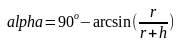

My Experience with Pseudoscience
UPDATE on 04/02/2024: I have made
a video refuting the Flat-Earth theory as a former Flat-Earther. In case your browser cannot open it, download
this MP4 and open it in VLC or something
similar. And please spread the word, Flat-Earthers need to be woken
up.
UPDATE on 03/10/2021: I have received some criticism on Internet forums that this text appears to be intended to slam everybody else as pseudoscience except me, and that it is what pseudoscientists do. That was not my intention at all, my intention was to make you more skeptical of all things outside the mainstream, including me. As well as the ideas you come up with that contradict the mainstream science. Outside of scientific consensus, no idea is anything more than possibly right. I, for example, think my idea about collision entropy of different parts of the grammar being measurable and useful to prove some etymologies of names of places in Croatia (you can read an English-language summary on my blog) has enough probability to be right to be worth sharing, and that it is at least interesting even if it is not correct. I am quite certain that, even if I am misunderstanding statistics here, my misunderstanding is not nearly as severe as that of anti-vaxxers or typical pseudolinguists. To judge whether it is correct, use your brain, you are probably more objective than I am. But also have a bit of self-doubt and realize there are people who know far more than you do about the subject, and who are far more likely to be right. Understand also that it is sometimes hard to tell who is an expert in some field (physicians, for example, know about nutritional science only slightly more than an average person), or even if anybody has meaningful expertise about the topic (for example, what happens if we try to radically transform the society to deal with climate change or a pandemic). And try to make sure you are hearing both sides of the story, and not just one which is easier to read (which is usually pseudoscience).
Do you know how,
for example,
the mathematicians
know the Pythagorean
Theorem is correct?
In school,
we aren't taught
how scientists
know what they know.
at least wherever there are some people fighting for the truth (because
at least some of them will be too ignorant for that).
Pseudosciences are widespread because of the way people react to nonsense: they ascribe the apparent incoherence to their own lack of knowledge. And more intelligent you are, more likely you are to fall into that trap, because, more intelligent somebody is, easier it is for him to imagine that there is something he is unaware of, so that something that doesn't make sense to him actually does make sense. This type of thinking is as flawed as it can get, but it's very common (and perhaps mostly subconscious).
A diagram explaining
why the horizon
appearing to rise
as we climb doesn't
prove the Earth
is flat
Second, if you draw a diagram, you will see that the angle at which you
see the horizon is given by the formula (assuming the Earth is a perfect
sphere, which it actually isn't, but that's not so important here)
, where r is the radius of the Earth (around 6'000'000 meters)
and h is your height relative to the surface of the Earth. So, if
you are on the Mount Everest (9'000 meters height), you will see the
horizon at the angle of 3.14 degrees. Barely perceptible. Actually, it's
not even barely perceptible, because, when you are on the Mount Everest,
the mountains hide the horizon in the first place. Furthermore, some
optical illusions make it clear that what our brain perceives to be eye
level, or even what it perceives to be a horizontal level at all, is
determined not only by the equilibrium sense in our ears, but also by
visual clues. This is well-known to mountain cyclists as the false flat
illusion. That makes the difference between eye level and the horizon
even more difficult to perceive. The fact that the horizon is not always
at your eye level, however, can be seen in at least two ways. You can
see it indirectly by watching the sunset sitting down and then quickly
standing up (the sun stays at your eye level as you stand up, but the
horizon falls slightly). And you can also see it directly using a device
with a gyroscope and a camera (such as modern smartphones). I think the
fact that the horizon demonstrably falls as you climb is a good argument
against the Earth being flat, you can see on
this forum thread
whether it works. The third statement is wrong, because, well, the word
*vīlla (with a long 'i'), borrowed into Old Croatian, would
give something like *Bȁo (with a short falling tone on 'a')
in Modern Croatian. Even if a linguist doesn't know the sound changes
that happened between Old Croatian and Modern Croatian, he still
wouldn't have expected the word to remain unchanged for more than a
thousand years. The consonants, the vowels and the accent "matching
perfectly" (ignoring the sound changes that have occured) is a strong
(though not a necessary) argument for the words being unrelated, rather
than related, because the sound changes don't affect individual words,
but whole languages. A failure of a sound change to affect a word it
could have affected is what requires an explanation, and not the word
changing to the unrecognizability due to the regular sound changes. The
point is, it's very easy for a layman to convince himself those
statements (and the similar ones) make sense, sometimes even easier than
it is to understand the true science to the point when it actually makes
sense. Our senses are unreliable. We witness illusions and
hallucinations (at least the ones such as dreams) all the time. Even
when they do give us correct information, it's very easy to
misinterpret. The science seeks to correct those things.
Pseudoscientists sometimes appear to exploit those things to make people
believe absurdities.
What we are taught at school might even have a detrimental effect to our ability to detect pseudoscience not only because they make us more susceptible to the survivorship bias, but also because schools often make us think we have competences we don't. The schools make us think we know how science works, but we are, thanks to the schools, not only ignorant, but also have a wrong conception about it. We are, for example, being taught linguistics and philology all the time in our Croatian language classes, and most of the people think that linguists and philologists are people who like to use some confusing arguments to discuss what is grammatical or stylistically right to say and what isn't. Nothing could be further from the truth, linguists and philologists are people whose job is to make testable theories about how languages work. But, if we think that linguists and philologists don't make testable theories, we see no reason to believe what they say about languages. And the same goes for most of the other sciences we are supposedly being taught at school.
Furthermore, because schools do not teach about the most dangerous pseudoscience in history that is Lysenkoism, the rhetorics from global warming deniers or anti-nuclear people such as "CO2 is plant food. The effects of increased CO2 levels in the atmosphere may very well be positive." or "Nuclear energy is too expensive. I would much rather protect people from the real danger of energy poverty than from the hypothetical dangers of global warming." sound, well, normal to most of the people. In reality, they should remind us of Lysenkoism, the time in not-so-distant past when people tried conquering the nature they did not understand instead of seeking to minimize their impact on nature, and caused massive crop failing and famine. Those rhetorics should sound insanely irresponsible. Only slightly less irresponsible than the suggestions that we should continue massively using antibiotics in the egg industry (as the result of that is completely predictable, unlike what a massive increase in CO2 levels in the atmosphere might do). But people, because they are unaware of Lysenkoism, usually fail to see that.
It is also important to understand that the school curriculum contains some half-truths, things that are technically true, but can easily mislead people. A good example of that, in our biology classes we are told that the synthesis of every protein begins with methionine, and that no protein can be synthesized without methionine. That is technically true, but telling students that without telling them that too much methionine raises the cholesterol levels is... dangerous, I don't know which other word to use here. It can easily mislead students into thinking a diet high in methionine is healthy, which it is not. Or, in our IT classes, we are taught that antivirus programs protect us from malware. But what we are not taught is that antivirus programs have false positives (detecting innocent programs as malware), the consequences of which can be just as bad as the actual malware. Students are being misled to think antivirus programs help us significantly, when it is questionable whether they help us at all.
And I think what schools teach about programming is one giant half-truth. Those programming competitions encourage students to study useless or even harmful things (superficial understanding of as many data structures and algorithms as possible, short variable names and other things that help you write short programs fast...). I have written a lot about it at the beginning on my Informatics page.
It is important to understand that, while censorship might indeed make it more difficult for conspiracy theories and other pseudosciences to spread, it also prevents them from being discussed. For example, Tony Heller is a blogger supporting all kinds of conspiracy theories, including that the elections in the US are fake (presumably implying elections all around the world are fake and that democracy is useless). He made a YouTube video full of long-debunked arguments for the 2020 US election being fake (many of them repeated from the previous elections). I made a video debunking his arguments once again, in hope to wake up some people who truly believe that. However, YouTube wouldn't allow me to upload it, presumably due to some censorship filter. So I uploaded it on GitHub, where I will arguably have less audience. Clearly, censorship by YouTube has really hurt me more than it has hurt Tony Heller.
It is also important to understand that censorship on the Internet pushes people who hold extreme beliefs into darker and darker corners of the Internet, where they are far less likely to hear the other side of the story.
I also think the problem of global warming is given too much attention to by the mainstream media, at least compared to other global problems. Even though extensive farming of cows emits 3 times as much methane per kilogram of meat than factory farming does (because cows emit a lot of methane when digesting grass, but very little methane when digesting grain), it is almost certainly better than factory farming which leads to superbacteria (not to mention animal rights issues regarding factory farming). I think mainstream media focusing too much on global warming, while ignoring other global issues, makes people blind to those things.
Everyone has to learn to recognize pseudoscience by themselves. What actually helps is knowing how people discover the pseudoscientific "knowledge".
You need to understand that, if you are going to deal with empirical matters, you will sometimes have to apply the Occam's Razor and reject the models that are full of ad-hoc hypotheses. Because almost every empirical claim can be defended using ad-hoc hypotheses, even the claim that the Earth is flat. Either you are going to be a radical skeptic (thinking knowledge is impossible) or you are going to sometimes be applying the Occam's Razor.
That's not to say the proponents of mainstream science sometimes aren't doing ad-hoc hypotheses. For instance, when I went to discuss the paper about applying informatics to the Croatian toponyms I published in Valpovački Godišnjak and Regionalne Studije (you have an English summary on my web-page about toponyms) on Internet forums, one of the first responses I got is "Maybe the collision entropy of the nouns in the Croatian language is significantly lower than the collision entropy of the entire Aspell word-list. Have you checked for that?". That's, if you ask me, a blatant ad-hoc hypothesis: it is inventing the reason why an experiment wouldn't work. And it's not on me to do some much more complicated experiment (somehow compile a list of nouns in the Croatian language) because of somebody's ad-hoc hypothesis.
One of the most unfortunate things about science is that, the more science advances, the easier it is for pseudoscientists to make ad-hoc hypotheses that sound plausible to a layman. For instance, in ancient and medieval times, Flat-Earhters probably couldn't have thought of explaining away the distance-between-far-away-places problem by claiming we are living in a non-Euclidean space: the concept of a non-Euclidean space wasn't known then. Moon deniers most likely didn't exist in ancient times for the simple reason that holograms didn't exist back then for somebody to claim that the Moon is a hologram. And if the Swahili grammar wasn't well-known, somebody couldn't comment on my paper "Your experiment isn't taking into account the possibility that nouns in the Croatian language have a significantly lower collision entropy than the rest of the words in the Aspell word-list." without sounding insane.
However, sometimes I ask myself, are the beliefs I hold pseudosciences based on that? About Digital Physics, the two most notable proponents of it are Gerard 't Hooft and Stephen Wolfram. What do they agree on? Actually, very little. Gerard 't Hooft thinks the universe is a type of a computer known as cellular automaton, so that there is locality in it. Stephen Wolfram argues the universe is very unlikely to be cellular automaton, because that makes phenomena such as Quantum Entanglement very difficult to explain, and he thinks the universe is a Turing Machine. I agree with Stephen Wolfram, but that is only because I am able to understand his arguments, while I am not able to even understand Gerard 't Hooft's arguments. What's obvious is that there is little or no scientific consensus among the proponents of Digital Physics. I am not sure how proponents of Digital Physics would respond to this argument "If Digital Physics is true, why aren't you able to agree on what type of a computer this universe is?". About Libertarianism, the two most notable proponents of it are Milton Friedman and Noam Chomsky. But they have wildly different views on how the economy would actually work in a libertarian society. Is that a sign that Libertarianism is pseudoscience? Proponents of Libertarianism argue that it is not, and that this is because Libertarianism is not an authoritarian ideology. Namely, they argue proponents of authoritarian ideologies are able to give you detailed description of how the economy would work if their ideology was implemented and even what happens in case of some catastrophy, while non-authoritarian ideologies are not. That is why non-authoritarian ideologues are not able to agree on the details of how society will function without a government. You be the judge whether that makes sense. In my alternative interpretation of the names of places in Croatia, I am going strongly against the scientific consensus. There is a virtual consensus among the people who study names of places in Croatia that names of places prove that Illyrian belonged to the satem group of Indo-European languages. I think (if you cannot open that link, try this) that there is only one scientifically rigorous argument (by scientifically rigorous argument I mean an argument with a p-value) one can make about whether Illyrian was centum or satem, and that it argues for Illyrian being a centum language. Am I being a pseudoscientist here? You be the judge.
Another example of a lack of a scientific consensus is this. Croatian toponyms show sound changes that are, to quote the StackExchange user Janus Bahs Jacquet, "At first blush, this looks very unexpected [to somebody who knows the basics of Slavic historical phonology].". For example, we see empirically that 'o' in ancient Croatian toponyms sometimes gets reflected in modern Croatian toponyms as 'i' (the Illyrian suffix "-ona" regularly gets reflected as "-in"), sometimes as 'u' and it sometimes disappears entirely (and, apparently, it never gets reflected as 'o'). But why? You can read the Janus Bahs Jacquet's explanation at the end of his answer to one of my forum questions. And you can read my explanation. And you can read the explanation in the Dubravka Ivšić'es PhD thesis. So, we have three different explanations of what actually happened. Are we doing pseudoscience here? You be the judge.
On the Flat Earth Society forums, many Round-Earthers make weak or even outright wrong arguments, such as "If the Earth is accelerating towards me when I jump, why do I feel like I'm being pulled downwards?" or "Why hasn't the Earth reached the speed of light yet?", which are misunderstandings of special relativity. The argument "How it is that the gravitational acceleration (approximately 9.8 m/s2) measurably changes if you climb on a high mountain?" is correct (in fact, there seems to be no way a Flat-Earther can explain that without contradicting many laws of physics), but it is unlikely to be convincing. Many people on the Flat Earth Society forums are making this argument: "How it is that you can see completely different stars at the same time if you look from the South Pole and from the North Pole?". In fact, that's trivially explained if you assume the Earth is flat: simply suppose stars are close to Earth. What's not easy to explain if you assume the Earth is flat is that if you look at the night sky from two points on Earth relatively near each other, you can see different constellations, but the common constellations (visible from both points) have the same apparent shape. If the stars were close, we would expect them to have different apparent shapes due to perspective distortions. Many people on the Flat Earth Society forums are making the following argument: "If the Earth is flat, how it is that birds appear to fly at a lower and lower altitude as they move from the zenith to the horizon?", which is a blatant misunderstanding of the perspective. There are many good perspective-based arguments for the Earth being round, but this is not one of them. And so on.
Furthermore, in my experience, many people on Internet forums are making good arguments, but are incapable of presenting those arguments properly. Many people who want to refute Flat-Earthism say GPS relies on the Earth being round, but, when asked how exactly, they give some incomprehensible word-salad. In fact, GPS is a good argument against the Earth being flat, because, if the Earth was flat and GPS was land-based, GPS devices wouldn't be able to tell their location with only three signals. When you know your distance from three locations, you can calculate two points where you might be. Now, if the Earth is round and GPS devices know they are below the satellites they are receiving the signals from, they can elliminate the point that's above the satellites. But if the Earth is flat, three signals would not be enough to tell your location, because how could GPS devices possibly know if they are above or below the emitters? But people on Internet forums tend to be unable to present that argument in such a comprehensible way. Similarly, when trying to refute radical anarchism, many people say that the government is responsible for the Internet. But when asked why couldn't the Internet as we know it exist without a government, they give some incomprehensible word-salad. But Internet as we know it really relies on there being some sane government regulation. Without the government regulation, many ISPs would probably set up their DNS servers to respond to requests from all IP addresses, rather than just the IP addresses they are supposed to serve (because not filtering the IP addresses makes the server faster assuming there is no denial-of-service attack going on). That would make it trivial to implement large denial-of-service attacks. DNS servers often respond with huge responses to short queries, and hackers could simply spoof their IP address to flood the server they are attacking with DNS responses to queries it did not actually make. But people on Internet forums are usually not presenting that argument in a format that can be evaluated.
An example of a forum thread that leads to nowhere is "What do you think about gun control laws?". Discussing such things takes a lot of time, and you are not going to get any closer to the truth about whether the estimates about how many lives guns save per year (by Gary Kleck...) are pseudoscientific or scientific (which is probably a crucial question in any discussion about gun control laws). That's not to say a good forum question cannot touch religion or politics: it absolutely can touch religion, like my questions about the Vulgate (the Jerome's Latin translation of the Bible). The suggestion that Croatian word for wind should be spelt the same as the Serbian word for wind is spelt ("vetar") may also be considered politically sensitive. In the USA, perhaps even my question about special relativity might be considered politically sensitive by the right-wingers (some of whom consider special relativity to be a heresy). Good questions on Internet forums can also touch philosophy, particularly the history of philosophy, like my question about Descartes'es philosophy. But the difference between those questions and question about whether gun control is good should be obvious. Not even asking whether the Gary Kleck's estimate that guns save around 400'000 lives per year in the US is corroborated by any other study is likely to be productive (I received slightly more upvotes than downvotes on that question, but the answers I received were mostly completely irrelevant). Asking what some groups of people mean when they say the things they say sometimes works (like when I asked what gun control advocates mean when they say owning a gun makes you more likely to be a victim of a violent crime), but it usually doesn't work either (like when I asked what Christian Scientists mean when they say death is an illusion).
The only one of my questions that are somewhat related to telling apart science from pseudoscience that turned out to be liked by the community is the question "If calculating the p-value post-hoc is meaningless, why is it reasonable to believe the Grimm's Law (and other laws of historical phonology) is true?". Namely, in a discussion I had on the PhilosophicalVegan forum (I wouldn't recommend you to try to read all that, there isn't much interesting there), the moderator called brimstoneSalad claimed, among other things, that nothing about historical phonology can be known with "reasonable certainty" because it is against the scientific method to establish a function to calculate the p-value post-hoc. They also claimed that the methodology of historical phonology, such as discovering laws to explain the apparent exceptions to the most obvious rules (Verner's Law...) is "a how-to of pseudoscience". Well, I agree that there is an apparent contradiction between the claims "Establishing a function to calculate the p-value after the fact is meaningless." and "It is reasonable to believe the Grimm's Law is true.". But I think a lot better answer to that apparent contradiction is that "Establishing a function to calculate the p-value after the fact is meaningless." is not true. If what brimstoneSalad is saying were true, historical linguists would not be able to agree on anything (for the same reason astrologists aren't). brimstoneSalad had some responses as to how historical linguists are apparently capable on agreeing on quite a lot of things, which... I don't understand them, and I think they are word-salads. And I think that discussion made me understand what Richard Feynman meant when he said "Philosophy of science is as useful to the scientists as ornithology is to birds.", I guess Richard Feynman got stuck in such discussions and that those discussions made him say that (mistakenly thinking that those discussions are an actual philosophy of science). I was wondering what people who are actually educated in the philosophy of science think about that issue, so I asked it on the Philosophy StackExchange.
Of course, the fact that your questions get downvoted doesn't necessarily mean they are not well-researched. My question about whether anybody has done a study about whether deep orthography decreases the entropy of the written language (posted here, here and here) wasn't well-received, even though it is arguably more well-researched than my highly-upvoted questions about linguistics (I have done some actual measurements there, which I didn't do in my highly-upvoted questions). It seems as if, to people in soft sciences, the terms like "collision entropy" or even "p-value" sound like pseudoscientific buzzwords, which is very unfortunate. I have asked a question about that on Linguistics Meta StackExchange.
I am not sure what makes a good answer on an Internet forum. Here are some answers I have written that were well-accepted by the community, even though the reason for that escapes me (especially why my answer to "How do you say 'seagull' in Latin?" got so many upvotes):
Wikipedia is the most reliable source of information on the Internet!
Wikipedia usually lets you hear both sides of the story about some issue and lets you make an informed oppinion. Other sources of information rarely do that. When Wikipedia is unreliable about something, then other tertiary sources of information (that is, those written by people who don't have very specialized knowledge of things they are writing about, such as encyclopedias or textbooks) are just as likely, if not even more likely, to be wrong about it.
UPDATE on 24/08/2023: To be fair, ever since I published my paper applying information theory to Croatian river names (you can read the English-language summary of it), and have tried to discuss it on Internet forums, my view on Wikipedia has changed significantly. I still think that what's on Wikipedia is very likely to be true, however, now I also think that reading too much tertiary sources of information (Wikipedia, etymological dictionaries...), and little-to-no primary and secondary sources of information, can and does give people a wrong idea how science works. To understand how science works, you also need to read primary and secondary sources, and not just tertiary sources. Tertiary sources almost never discuss p-values, which are the core principle of the modern scientific method. I think that many people I met on Internet forums are basically reading only tertiary sources of information, and that that is why "p-value" sounds like a pseudoscientific buzzword to them, and that that is why they reject my theories. It is unfortunate, but it shows why tertiary sources will not help you understand too much about how science works.
Given how common misunderstanding of statistics is in pseudosciences, a question is "How do you recognize when somebody is using statistics correctly?". I wish I knew the answer to that question. But my best guess is that it happens when somebody is calculating p-values and arriving at reasonable results. If somebody is not trying to calculate p-values, that can easily be because they do not understand statistics or don't like what statistics tells them (that their observations are likely to be due to chance). If somebody is, for example, arriving at a p-value of 1/10'000 in a very soft field (where you expect p-values to be something like 1/20), there is a very good chance they are calculating something incorrectly (like I was before I analyzed the problem of Croatian river names more deeply). There is a reason p-values are valued in science. Of course, there are exceptions. Ignaz Semmelweis, for example, was not calculating p-values, presumably because statistics back then was not yet advanced enough for that to be common or even possible. Or maybe because he thought the patterns he discovered were so obvious one does not need a p-value for that. Grimm's Law and Havlik's Law in linguistics are also so obvious once you look at the data that one does not need a p-value for them (though I am quite sure linguistics would go a lot further had it used statistics more). But I still think "Look for the p-values." is a good advice for telling apart science from pseudoscience.
Why would you expect larger p-values in softer fields? Well, you need to understand that, when you are doing historical phonology (Grimm's Law, Havlik's Law...), you are assuming that linguistic classification (whether some language is Indo-European or not) is correct. Linguistic classification is a harder field than historical phonology, the facts from linguistic classification are more certain than facts from historical phonology. That's why the p-values is historical phonology are larger than p-values in linguistic classification. And, when you are doing etymology, you are assuming both that historical phonology and that linguistic classification are correct. Thus, when doing etymology, you should expect larger p-values than if doing historical phonology. Etymology is a much softer field than historical phonology.
As an example of studies that are arriving at an unreasonable p-value (or not calculating the p-value at all), look at most studies about gun control. Most of the studies about gun control compare homicide rates in some city before and after some gun control law in that city was passed, and they conclude based on that whether it was effective or counter-productive. While that intuitively sounds like a reasonable methodology, it is not. Think of it this way: the vast majority of gun control laws only affect the sales of new guns. And there are 400 million guns already in the US. So, gun control laws only affect around 1% of total guns in existence. And homicide rates vary by around 6% from one year to the next. The signal-to-noise ratio is therefore at most 1:6. It is extremely unlikely that any such gun control study can arrive at a statistically significant result. The famous Gary Kleck's study where he tried to estimate the number of lives saved by defensive gun use each year at least does not suffer from that fatal flaw.
I think that many pseudosciences would cease to exist if Petzval Field Curvature were common knowledge. Namely, pseudoscientists often imply it is possible to see via a photograph whether some huge lines are parallel or straight. That's simply not how cameras work: the image that the lens produces is curved, while the light sensor in the camera is flat. Ironically, naked eye might be a better tool to tell whether some long line is straight or curved, as at least the retina of the eye is curved like the image that the lens produces. But schools, unfortunately, do not teach such things.
This should go without saying, but, in order for some observation to be evidence of the Earth being flat, it is not enough for it to be difficult to explain if you assume the Earth is round. It also needs to be easy to explain under the Flat Earth Theory. I think the only Flat-Earthers' argument that cannot be debunked simply by pointing out that obvious fact from epistemology is the argument "If the Sun were really 150'000'000 kilometers high in the sky, the crepuscular rays would seem parallel.", as it is indeed easier to suppose the Sun is only a few thousand miles up in the sky than to explain the optical illusion.
Or a less extreme example than Flat-Earthers, people who are denying global warming is anthropogenic. Mainstream climate science thinks that CO2 increase in the atmosphere causes a positive feedback loop of water increasing as well, increasing the effect of CO2 by around 3 times. People who are denying global warming is anthropogenic generally deny that that positive feedback loop exists. And most of their arguments are similar to this: "Almost all climate models which predict global warming also predict that infrared (long-wave) radiation from the Earth will decrease over time. Yet, the satellite data shows that it has increased."... without showing a mathematical model that predicts the Earth is warming and that infrared radiation is increasing. In other words, they are trying to replace mathematical models which at least explain why the Earth is warming with a mathematical model that doesn't even do that, just because they supposedly cannot explain infrared radiation increasing. That's going against the scientific method. And by the way, mainstream climate models aren't really predicting infrared radiation will decrease, they are predicting it will decrease slightly and then start increasing, and there were no satellites back when it was decreasing.
An error that's common in pseudosciences that also belongs to misunderstanding epistemology is trying to use a soft science to contradict a hard one. How many times have you heard arguments such as "Saturated fat cannot cause heart disease, because our ancestors have been eating meat for millions of years, so we evolved against it." or "Fructose cannot be causing type-2-diabetes, as our ancestors have been eating bananas, which are full of fructose, for millions of years, so we evolved against it." or "Heme iron cannot be causing colon cancer, as our ancestors have been eating red meat for millions of years, so we evolved against it."? Such arguments are wrong on several levels. For the first two argtuments, we can refute them simply by pointing out the facts that meat of wild animals (rabits...) contains way less saturated fat than the meat we eat today, and that wild bananas contain way less fructose than bananas we eat today. All three of those arguments can be refuted by pointing out the fact that evolution doesn't care about diseases people tend to get when they are old, as life expectancy was significantly lower in pre-history than it is today. Also, what makes people who use those arguments think protection against those things even can evolve? But, more fundamentally, those arguments are attempting to use a soft science to contradict a hard one. Guesses about what our ancestors used to eat millions of years ago are way softer science than "Heme iron mixed with omega-6-acids in the presence of the enzymes found in human colon produces carcinogenous substances.". I also think Dubravka Ivšić, in her response to my paper about the river name Karašica, was also doing this error of attempting to use a soft science to contradict a hard one. Informatics is a way harder science than historical linguistics, and, if informatics says that the probability for the k-r pattern in Croatian river names to emerge by chance is negligible, you contradict that using either informatics or some even harder science, not historical linguistics. You don't get to use magical languages to get around the limits put by informatics.
UPDATE on 22/09/2019: I've just posted a YouTube video about pseudoscience in American politics. If you can't open it, you can perhaps try to open a low-quality MP4 file hosted on this server (it can be opened on almost any platform using VLC Media Player). Failing to do even that, you can probably download the MP3 audio.
UPDATE on 08/03/2020: I've just posted a YouTube video criticising climate change denialism, you can see it here. If you can't open it, try this.
UPDATE on 19/04/2020: Here is the Croatian version of my parody of the conspiracy theorists. If you can't open it, try the DOC, DOCX and ODT.
UPDATE on 07/04/2022: I have made a video debunking Tony Heller's claims about the election fraud. However, YouTube refuses to let me upload it there, so I have uploaded it on GitHub Pages. My best guess as to why it cannot be uploaded is that YouTube's Artificial Intelligence thinks I am claiming the election fraud. Nothing could be further from the truth, I am critical of claiming such a thing. But that's how censorship using artificial intelligence works.
UPDATE on 01/12/2023: A blogger called dr. Moran has made a video claiming that Moderna vaccination somehow magically (he doesn't even provide a speculative explanation of how it could) causes myocarditis in 3% of vaccinated adolescents (that is, around 20 to 50 times more often than COVID-19 does). I made a video response to that video. In case you cannot open it, try downloading this MP4 and opening it in VLC or some similar program. In all seriousness, though, making response videos to such claims is probably a waste of time. I think that Flat-Earthism has more chance of catching on that that does.
UPDATE on 03/10/2021: I have received some criticism on Internet forums that this text appears to be intended to slam everybody else as pseudoscience except me, and that it is what pseudoscientists do. That was not my intention at all, my intention was to make you more skeptical of all things outside the mainstream, including me. As well as the ideas you come up with that contradict the mainstream science. Outside of scientific consensus, no idea is anything more than possibly right. I, for example, think my idea about collision entropy of different parts of the grammar being measurable and useful to prove some etymologies of names of places in Croatia (you can read an English-language summary on my blog) has enough probability to be right to be worth sharing, and that it is at least interesting even if it is not correct. I am quite certain that, even if I am misunderstanding statistics here, my misunderstanding is not nearly as severe as that of anti-vaxxers or typical pseudolinguists. To judge whether it is correct, use your brain, you are probably more objective than I am. But also have a bit of self-doubt and realize there are people who know far more than you do about the subject, and who are far more likely to be right. Understand also that it is sometimes hard to tell who is an expert in some field (physicians, for example, know about nutritional science only slightly more than an average person), or even if anybody has meaningful expertise about the topic (for example, what happens if we try to radically transform the society to deal with climate change or a pandemic). And try to make sure you are hearing both sides of the story, and not just one which is easier to read (which is usually pseudoscience).
Content
- What is pseudoscience?
- SCIgen - people attribute apparent incoherence to their own lack of knowledge
- Why many people follow pseudoscience rather than science?
- What makes sense to scientists is different from what makes sense to laymen
- Why school knowledge does not help us recognize pseudoscience?
- Why censorship is not a good answer to pseudoscience?
- Ad-hoc hypotheses - what are they and why they are distinctive of pseudoscience
- Why is there a lot of consensus in science, but little in pseudoscience?
- Why demanding more rigorous experiments, but never doing ones, is distinctive of pseudoscience?
- Why Internet forums are not a way to detect pseudoscience
- Some myths about pseudoscience
- Why common knowledge is unreliable
- How pseudosciences come to be?
- Three common sources of errors in pseudosciences
- Conspiracy theories
- Conclusion
What is pseudoscience?
Pseudoscience simply means "false science", something which is presented as science, but demonstrably doesn't follow the methods of science. Many people believe that pseudoscience is basically isolated to specific and widely discredited fields, like astrology and numerology. However, I would argue that pseudoscience is probably everywhere,Do you know how,
for example,
the mathematicians
know the Pythagorean
Theorem is correct?
In school,
we aren't taught
how scientists
know what they know.
SCIgen - people attribute apparent incoherence to their own lack of knowledge
To understand why, consider the case of SCIgen. It's a computer program that generates nonsense in the form of texts about informatics, using the vocabulary typical for them. Those texts were sent to a few well-known peer-reviewed journals. Most of them rejected them, yet some of them accepted them. When asked why, one of the recensents responded that it didn't make sense to him either, but he attributed its apparent incoherence to his own lack of knowledge in that particular field of informatics (Here is a paper I've recently written about informatics, I can understand how somebody might have a hard time differentiating stuff like that from gibberish.).Pseudosciences are widespread because of the way people react to nonsense: they ascribe the apparent incoherence to their own lack of knowledge. And more intelligent you are, more likely you are to fall into that trap, because, more intelligent somebody is, easier it is for him to imagine that there is something he is unaware of, so that something that doesn't make sense to him actually does make sense. This type of thinking is as flawed as it can get, but it's very common (and perhaps mostly subconscious).
Why many people follow pseudoscience rather than science?
In fact, I would argue there are reasons why intelligent but ignorant people are sometimes more likely to believe pseudoscience than actual science. First, pseudoscientists usually have more exciting ideas than actual science does. For example, pseudoscientists often claim to have discovered a method to reliably tell if somebody is lying to you. Those things interest people. Psychologists arguing such methods can't work much better than chance? Not so much. Pseudoscientists often claim they've reconstructed the first human language. Many people find that exciting. They will rather read that than read the linguists explaining their methods are contrary to the methods accepted in linguistics (that their methods, if applied to rigorously studied language families such as Indo-European languages, would lead to a huge number of false positives and also to many false negatives). Second, pseudoscientists usually have shorter rhetorics than the actual science does. For example, pseudoscientists often say things such as that the double-slit experiment proves that bilocation is possible or that the quantum entanglement explains the telekinesis. Now, if people actually read both sides of the story, that is, both what the pseudoscientists write and the actual science of the double-slits experiment and quantum entanglement, they would ask what drugs those pseudoscientists are on. But most of the people don't do that. They think that if someone has a short rhetoric regarding something, he knows what he is talking about.What makes sense to scientists is different from what makes sense to laymen
Third, though I am not sure if that plays a significant role, sometimes what makes sense to a scientist is different from what makes sense to a layman. To understand why, consider the following statements:- The ice will melt sooner on a piece of wood than on a piece of metal of the same temperature, because the metal feels colder when you touch it.
- The horizon appears to rise with you as you climb, and, if the Earth were round, we would expect it to fall. Therefore, the Earth is flat.
- The name of the Croatian village Vîljevo (pronounced VEEL-yev-aw) obviously comes from the Latin word vīlla (country house), both the consonants and the vowels and the accent match.
A diagram explaining
why the horizon
appearing to rise
as we climb doesn't
prove the Earth
is flat
Why school knowledge does not help us recognize pseudoscience?
So, what do I think, what's a good way of recognizing pseudosciences? Well, let me be clear: the knowledge we are taught at school helps very little, if at all. We usually aren't taught how scientists know what they know, and that, during the history of science, most of the supposed discoveries were actually false.How history of science taught at school makes people susceptible to survivorship bias
In school, what we are taught about history of science are, at least the vast majority of them, the succes stories. That's not what's going on in the real world, for every discovery in some field, there were countless people who put a lot of effort and were confident they were right, but they got things wildly wrong. Because such things are only rarely mentioned in school, schools make us very susceptible to the survivorship bias, making us think that, if somebody claims to have discovered something new, they likely have. The truth is, somebody who claims to have deciphered some ancient language is more likely to be somebody like Johannes Goropius Becanus, a man who convinced himself and many others that the Egyptian hieroglyphs represent the Dutch language (seriously!), than like Champollion. Because, for every Champollion, there were 10 Goropiuses that schools don't mention (Joseph Smith, a man who thought he discovered that the hieroglyphs represent a language related to Quechua, just to name one more of them). If most of the experts in the field think you are wrong, and that's whenever you think you've discovered something new, you usually are wrong.What we are taught at school might even have a detrimental effect to our ability to detect pseudoscience not only because they make us more susceptible to the survivorship bias, but also because schools often make us think we have competences we don't. The schools make us think we know how science works, but we are, thanks to the schools, not only ignorant, but also have a wrong conception about it. We are, for example, being taught linguistics and philology all the time in our Croatian language classes, and most of the people think that linguists and philologists are people who like to use some confusing arguments to discuss what is grammatical or stylistically right to say and what isn't. Nothing could be further from the truth, linguists and philologists are people whose job is to make testable theories about how languages work. But, if we think that linguists and philologists don't make testable theories, we see no reason to believe what they say about languages. And the same goes for most of the other sciences we are supposedly being taught at school.
Furthermore, because schools do not teach about the most dangerous pseudoscience in history that is Lysenkoism, the rhetorics from global warming deniers or anti-nuclear people such as "CO2 is plant food. The effects of increased CO2 levels in the atmosphere may very well be positive." or "Nuclear energy is too expensive. I would much rather protect people from the real danger of energy poverty than from the hypothetical dangers of global warming." sound, well, normal to most of the people. In reality, they should remind us of Lysenkoism, the time in not-so-distant past when people tried conquering the nature they did not understand instead of seeking to minimize their impact on nature, and caused massive crop failing and famine. Those rhetorics should sound insanely irresponsible. Only slightly less irresponsible than the suggestions that we should continue massively using antibiotics in the egg industry (as the result of that is completely predictable, unlike what a massive increase in CO2 levels in the atmosphere might do). But people, because they are unaware of Lysenkoism, usually fail to see that.
False things taught at school
Not to mention schools often teach things which are objectively incorrect, and sometimes it should even be obvious they are incorrect. Like the claim that human beings use only 10% of their brains. It should be obvious that is wrong: if it were true, a shot in a head by a bullet would almost always be survivable. But it almost never is. Obviously, most of our brain is actually necessary for survival (that is mostly because, while some animals relatively closely related to humans, such as cats, can survive with relatively little brain intact, the corresponding parts of the brain in humans have de-evolved and cannot take the same function in case much of the brain is damaged), much less unused. Or that birds and airplanes can fly because their wings are shaped so that air above their wings moves much faster than the air below the wings. It should be obvious that explanation is incomplete at best: if that were the main thing making birds and airplanes fly, they would not be able to fly upside down. There are many other wrong things widely taught in schools, though most are not as ridiculous once you think about them. But, really, how are schools supposedly teaching critical thinking if they are teaching such things?It is also important to understand that the school curriculum contains some half-truths, things that are technically true, but can easily mislead people. A good example of that, in our biology classes we are told that the synthesis of every protein begins with methionine, and that no protein can be synthesized without methionine. That is technically true, but telling students that without telling them that too much methionine raises the cholesterol levels is... dangerous, I don't know which other word to use here. It can easily mislead students into thinking a diet high in methionine is healthy, which it is not. Or, in our IT classes, we are taught that antivirus programs protect us from malware. But what we are not taught is that antivirus programs have false positives (detecting innocent programs as malware), the consequences of which can be just as bad as the actual malware. Students are being misled to think antivirus programs help us significantly, when it is questionable whether they help us at all.
And I think what schools teach about programming is one giant half-truth. Those programming competitions encourage students to study useless or even harmful things (superficial understanding of as many data structures and algorithms as possible, short variable names and other things that help you write short programs fast...). I have written a lot about it at the beginning on my Informatics page.
Why censorship is not a good answer to pseudoscience?
Some people advocate government policies like censorship to try to prevent pseudosciences from spreading. But, if you know anything about politics, you know that what politicians talk makes scientists dizzy. If the politicians were able to get rid of pseudosciences, they would first do that in politics. To the contrary, American politics is perhaps one of the main reasons the Internet is so full of pseudoscience. Namely, this isn't something people talk about a lot, but the American right-wing politicians (and sometimes also the left-wing politicians, but mostly the right-wing ones) hold a pressure on the media to support various conspiracy theories, because they are convinced that the science is some force of evil fighting against democracy and capitalism (and they are so fanatical that they do not see how absurd it is to do that if you actually care about democracy and capitalism). In the US, for example, it's completely normal to find an article in the newspapers claiming that the scientists are in a conspiracy hiding that evolution or anthropogenic global warming have been disproved. Why is it talked about so little? Well, partly because major social media platforms, such as YouTube, FaceBook and Twitter, routinely demonetize, remove from search results, or even ban those who are openly critical of the mainstream media (making it even harder to find out what the truth is). So, people are indoctrinated into that conspiracitory way of thinking, and apply it further.It is important to understand that, while censorship might indeed make it more difficult for conspiracy theories and other pseudosciences to spread, it also prevents them from being discussed. For example, Tony Heller is a blogger supporting all kinds of conspiracy theories, including that the elections in the US are fake (presumably implying elections all around the world are fake and that democracy is useless). He made a YouTube video full of long-debunked arguments for the 2020 US election being fake (many of them repeated from the previous elections). I made a video debunking his arguments once again, in hope to wake up some people who truly believe that. However, YouTube wouldn't allow me to upload it, presumably due to some censorship filter. So I uploaded it on GitHub, where I will arguably have less audience. Clearly, censorship by YouTube has really hurt me more than it has hurt Tony Heller.
It is also important to understand that censorship on the Internet pushes people who hold extreme beliefs into darker and darker corners of the Internet, where they are far less likely to hear the other side of the story.
I also think the problem of global warming is given too much attention to by the mainstream media, at least compared to other global problems. Even though extensive farming of cows emits 3 times as much methane per kilogram of meat than factory farming does (because cows emit a lot of methane when digesting grass, but very little methane when digesting grain), it is almost certainly better than factory farming which leads to superbacteria (not to mention animal rights issues regarding factory farming). I think mainstream media focusing too much on global warming, while ignoring other global issues, makes people blind to those things.
Everyone has to learn to recognize pseudoscience by themselves. What actually helps is knowing how people discover the pseudoscientific "knowledge".
Ad-hoc hypotheses - what are they and why they are distinctive of pseudoscience
Pseudoscientists do what's called ad-hoc hypotheses. An excellent example of that is given by Carl Sagan. Suppose somebody claims they have a dragon in their garage. Of course, you don't believe them and ask them to show it to you. He says it's invisible. You ask him to spray some color on it to make it visible. He says that won't work because the dragon in his garage is incorporeal. So, you ask him to try to measure the temperature of the fire in its mouth. He says that won't work either and that the dragon's fire is heatless. I've studied many pseudosciences, and I can safely tell you, once you get deeper into some pseudoscience, that's the type of reasoning you engage in. You don't want to do an experiment because you know what the result would be. Scientists honestly try to falsify their hypotheses by experiments or observation. Pseudoscientists try to make up reasons why an experiment wouldn't work. You know, the horoscopes don't work because making one is error-prone. If you see such type of reasoning again and again in some field, you can be certain you are dealing with a pseudoscience.You need to understand that, if you are going to deal with empirical matters, you will sometimes have to apply the Occam's Razor and reject the models that are full of ad-hoc hypotheses. Because almost every empirical claim can be defended using ad-hoc hypotheses, even the claim that the Earth is flat. Either you are going to be a radical skeptic (thinking knowledge is impossible) or you are going to sometimes be applying the Occam's Razor.
That's not to say the proponents of mainstream science sometimes aren't doing ad-hoc hypotheses. For instance, when I went to discuss the paper about applying informatics to the Croatian toponyms I published in Valpovački Godišnjak and Regionalne Studije (you have an English summary on my web-page about toponyms) on Internet forums, one of the first responses I got is "Maybe the collision entropy of the nouns in the Croatian language is significantly lower than the collision entropy of the entire Aspell word-list. Have you checked for that?". That's, if you ask me, a blatant ad-hoc hypothesis: it is inventing the reason why an experiment wouldn't work. And it's not on me to do some much more complicated experiment (somehow compile a list of nouns in the Croatian language) because of somebody's ad-hoc hypothesis.
One of the most unfortunate things about science is that, the more science advances, the easier it is for pseudoscientists to make ad-hoc hypotheses that sound plausible to a layman. For instance, in ancient and medieval times, Flat-Earhters probably couldn't have thought of explaining away the distance-between-far-away-places problem by claiming we are living in a non-Euclidean space: the concept of a non-Euclidean space wasn't known then. Moon deniers most likely didn't exist in ancient times for the simple reason that holograms didn't exist back then for somebody to claim that the Moon is a hologram. And if the Swahili grammar wasn't well-known, somebody couldn't comment on my paper "Your experiment isn't taking into account the possibility that nouns in the Croatian language have a significantly lower collision entropy than the rest of the words in the Aspell word-list." without sounding insane.
Why is there a lot of consensus in science, but little in pseudoscience?
Now, obviously, pseudoscientists are trying to hide that. They are making it look like their hypotheses aren't made up as excuses not to do an experiment, but that they actually logically follow from something. Biblical literalists claim their make-beliefs about the universe and atoms are based on the Bible. A little problem is: the Bible doesn't talk about those things. That's why the Biblical literalists can't agree on anything. They don't agree even whether the Earth is round of flat. Scientists, on the other hand, agree about those things. If people who study some field fail to agree on even the most basic things, you can be sure you are dealing with just another pseudoscience. Why it is that, if you read your weekly horoscope in different newspapers, you will often get contradictory predictions? Because astrology is pseudoscience.However, sometimes I ask myself, are the beliefs I hold pseudosciences based on that? About Digital Physics, the two most notable proponents of it are Gerard 't Hooft and Stephen Wolfram. What do they agree on? Actually, very little. Gerard 't Hooft thinks the universe is a type of a computer known as cellular automaton, so that there is locality in it. Stephen Wolfram argues the universe is very unlikely to be cellular automaton, because that makes phenomena such as Quantum Entanglement very difficult to explain, and he thinks the universe is a Turing Machine. I agree with Stephen Wolfram, but that is only because I am able to understand his arguments, while I am not able to even understand Gerard 't Hooft's arguments. What's obvious is that there is little or no scientific consensus among the proponents of Digital Physics. I am not sure how proponents of Digital Physics would respond to this argument "If Digital Physics is true, why aren't you able to agree on what type of a computer this universe is?". About Libertarianism, the two most notable proponents of it are Milton Friedman and Noam Chomsky. But they have wildly different views on how the economy would actually work in a libertarian society. Is that a sign that Libertarianism is pseudoscience? Proponents of Libertarianism argue that it is not, and that this is because Libertarianism is not an authoritarian ideology. Namely, they argue proponents of authoritarian ideologies are able to give you detailed description of how the economy would work if their ideology was implemented and even what happens in case of some catastrophy, while non-authoritarian ideologies are not. That is why non-authoritarian ideologues are not able to agree on the details of how society will function without a government. You be the judge whether that makes sense. In my alternative interpretation of the names of places in Croatia, I am going strongly against the scientific consensus. There is a virtual consensus among the people who study names of places in Croatia that names of places prove that Illyrian belonged to the satem group of Indo-European languages. I think (if you cannot open that link, try this) that there is only one scientifically rigorous argument (by scientifically rigorous argument I mean an argument with a p-value) one can make about whether Illyrian was centum or satem, and that it argues for Illyrian being a centum language. Am I being a pseudoscientist here? You be the judge.
Another example of a lack of a scientific consensus is this. Croatian toponyms show sound changes that are, to quote the StackExchange user Janus Bahs Jacquet, "At first blush, this looks very unexpected [to somebody who knows the basics of Slavic historical phonology].". For example, we see empirically that 'o' in ancient Croatian toponyms sometimes gets reflected in modern Croatian toponyms as 'i' (the Illyrian suffix "-ona" regularly gets reflected as "-in"), sometimes as 'u' and it sometimes disappears entirely (and, apparently, it never gets reflected as 'o'). But why? You can read the Janus Bahs Jacquet's explanation at the end of his answer to one of my forum questions. And you can read my explanation. And you can read the explanation in the Dubravka Ivšić'es PhD thesis. So, we have three different explanations of what actually happened. Are we doing pseudoscience here? You be the judge.
Why demanding more rigorous experiments, but never doing ones, is distinctive of pseudoscience?
I also think that requiring more rigorous experiments is a hidden ad-hoc hypothesis in many types of pseudoscience. Pseudoscientists often demand more rigorous experiments before accepting the scientific consensus, in spite of such experiments being unethical to do. Anti-vaxxers are often demanding that we make a large-scale study to see whether measles vaccine causes autism. The truth is, such an experiment just cannot be done, as it is very unethical to give children placebo instead of a measles vaccine which we know works and we have very good reasons to think it cannot be causing autism (it would require almost everything we think we know about human brain to be false). Anti-vegetarians are often demanding rigorous studies showing that saturated fat cause heart disease or that heme iron causes colon cancer, to be done on humans. Sorry, that is arguably very unethical. And suggesting without evidence (or, in this case, in spite of evidence) mice and humans are different in that regard is an obvious ad-hoc hypothesis. Furthermore, since anti-vegetarianism is often associated with statin denial, and there are rigorous studies in humans suggesting statins work in curing heart disease caused by high cholesterol, I doubt most anti-vegetarians would be convinced by rigorous studies done in humans. Veganism is, for a reason that escapes me, often associated with denial that sugar causes type-2-diabetes, and I also doubt rigorous studies done in humans would convince people holding that belief that they are wrong.Why Internet forums are not a way to detect pseudoscience
Now, the Internet culture gives us many clues how to recognize pseudoscience. Many of them will guide you right in the wrong direction. Many people, who want to hear both sides of some story, go to an Internet forum. The truth is, on Internet forums, you are happy to hear even one side of the story. If 100% of what's written by those who support pseudoscience is nonsense, and 90% of what's written by those who support science is nonsense, you are going to have a hard time trying to pick the right side.On the Flat Earth Society forums, many Round-Earthers make weak or even outright wrong arguments, such as "If the Earth is accelerating towards me when I jump, why do I feel like I'm being pulled downwards?" or "Why hasn't the Earth reached the speed of light yet?", which are misunderstandings of special relativity. The argument "How it is that the gravitational acceleration (approximately 9.8 m/s2) measurably changes if you climb on a high mountain?" is correct (in fact, there seems to be no way a Flat-Earther can explain that without contradicting many laws of physics), but it is unlikely to be convincing. Many people on the Flat Earth Society forums are making this argument: "How it is that you can see completely different stars at the same time if you look from the South Pole and from the North Pole?". In fact, that's trivially explained if you assume the Earth is flat: simply suppose stars are close to Earth. What's not easy to explain if you assume the Earth is flat is that if you look at the night sky from two points on Earth relatively near each other, you can see different constellations, but the common constellations (visible from both points) have the same apparent shape. If the stars were close, we would expect them to have different apparent shapes due to perspective distortions. Many people on the Flat Earth Society forums are making the following argument: "If the Earth is flat, how it is that birds appear to fly at a lower and lower altitude as they move from the zenith to the horizon?", which is a blatant misunderstanding of the perspective. There are many good perspective-based arguments for the Earth being round, but this is not one of them. And so on.
Furthermore, in my experience, many people on Internet forums are making good arguments, but are incapable of presenting those arguments properly. Many people who want to refute Flat-Earthism say GPS relies on the Earth being round, but, when asked how exactly, they give some incomprehensible word-salad. In fact, GPS is a good argument against the Earth being flat, because, if the Earth was flat and GPS was land-based, GPS devices wouldn't be able to tell their location with only three signals. When you know your distance from three locations, you can calculate two points where you might be. Now, if the Earth is round and GPS devices know they are below the satellites they are receiving the signals from, they can elliminate the point that's above the satellites. But if the Earth is flat, three signals would not be enough to tell your location, because how could GPS devices possibly know if they are above or below the emitters? But people on Internet forums tend to be unable to present that argument in such a comprehensible way. Similarly, when trying to refute radical anarchism, many people say that the government is responsible for the Internet. But when asked why couldn't the Internet as we know it exist without a government, they give some incomprehensible word-salad. But Internet as we know it really relies on there being some sane government regulation. Without the government regulation, many ISPs would probably set up their DNS servers to respond to requests from all IP addresses, rather than just the IP addresses they are supposed to serve (because not filtering the IP addresses makes the server faster assuming there is no denial-of-service attack going on). That would make it trivial to implement large denial-of-service attacks. DNS servers often respond with huge responses to short queries, and hackers could simply spoof their IP address to flood the server they are attacking with DNS responses to queries it did not actually make. But people on Internet forums are usually not presenting that argument in a format that can be evaluated.
What Internet forums are actually good for
That's not to say Internet forums are never useful. To the contrary, I have learned a lot from them. But what they are useful for is not detecting pseudoscience, but asking for relatively specific help with your research. Some questions I asked on Internet forums that turned out to be productive and liked by other members of the forum include:-
Somebody I don't know on GitHub made a pull request to my
program, and I accepted it. Can I still present that program as my
Bachelor Thesis?
I don't know what is relevant here and what isn't, so I thought I will just describe my entire situation.
I am a third-year computer engineering student at the FERIT University in Osijek.
It was the year 2020. My Computer Architecture professor was afraid how the laboratory exercises of the Computer Architecture classes would be done if the physical laboratory exercises were cancelled due to the pandemic. Namely, we are using PicoBlaze there as an example of a simple computer, and he was afraid that students would run into all kinds of technical problems trying to run the existing assemblers and emulators of the PicoBlaze computer on various computers they might have at home (in my opinion, rightly so). So, he asked me to make an assembler and an emulator for PicoBlaze that would run in any modern browser. In return, he would free me from the assembly language exam (meaning he would give me an A even if I don't show up at the test) and let me write my Bachelor Thesis about that project of mine. So, I did that, you can see my work on my website (I targetted Firefox 52 as the oldest browser it should work in, because many computers at my university are running Windows XP and are using Firefox 52 as the browser). The physical laboratory exercises were not actually cancelled, so the original purpose of that project was... not fullfilled.
A few months after I made that PicoBlaze assembler and emulator, I got a psychotic disorder preventing me from attending the university and working on that project for almost a year. Not long before I got that psychotic disorder, I added the MIT licence to my project.
In the meantime, my work started being used at a university in Argentina for introduction to embedded systems. So, recently, I received pull requests from a GitHub user named agustiza, who claims to be from a university in Argentina where my project is used. At first, it started with small bug-fixes, but it soon followed with agustiza adding significant new features. I accepted those pull requests.
Can I still present my PicoBlaze assembler and emulator as my Bachelor Thesis, or will I run into problems because a part of it was made by that agustiza? Do I need to write a new Bachelor Thesis? -
What sequence of instructions is the equivalent to
fcomipon i486? Do you perhaps happen to know, what would be the easiest way to modify my AEC-to-x86 compiler (you can run the core of it in browser) to be able to target i486? Right now, I think it targets i486, except relying on thefcomipinstruction which exists only on i686 and newer. At first I thought I might replacefcomipwith something like:fsubp fist dword [result] cmp dword [result],0
But the problem with that is that I'd also need to replace everyjawithjgand everyjbwithjl, which, given the way the compiler is structured, is not a simple task (I'm afraid it's too error-prone). Do you have a better idea? Is there a way to push FPU flags (ones affected byfcomp) and pop them into CPU flags that would work on both i486 and 64-bit x86 processors? - "Videre" is to "spectare" what "audire" is to...? I am interested, did Latin have a word meaning specifically "to listen", as opposed to "hear"? Because it did have a word for "look" (spectare), as opposed to "see" (videre).
- In Judith in Vulgate, why does Jerome transliterate the name "Arphaxad" with 'ph', but he transliterates "Holofernes" with an 'f'? By the time of Jerome, both 'f' and 'ph' were the same sound, the English /f/, right? And Greek letter φ was pronounced /f/ as well at the time, right?
- Why doesn't the number of ones in the binary representation of Fibonacci numbers grow linearly? I would expect it to grow linearly (because the Fibonacci numbers grow exponentially with the index, and the number of binary ones is proportional to the logarithm, so exponential growth and logarithmic growth cancel each other out into linear growth), but a computer program tells me this is not the case. (UPDATE: In spite of my question receiving many more upvotes than downvotes, the moderators of the forum have complained that it is off-topic. You can read about that here.)
- How do you say "Heroes are never forgotten." in Latin? It is tricky because the (apparently only) Latin verb meaning "to forget", "oblivisci", has no (semantically) passive forms.
-
How would you say "She said goodbye too many times before." in Latin?
The refrain of the Maroon 5's song "This Love" contains the verse "She said goodbye too many times before.". How would you translate that verse into Latin? My attempt would be "Ea dixit 'Vale!' plurimis temporibus abhinc.", but I am not sure that's correct. - What exactly do "ut" and "quid" mean in "Deus meus, ut quid dereliquisti me?" ("My God, why have you forsaken me?")? "Ut quid" there is usually translated as "why", but I know the usual word for "why" is "cur". So, why the weird phrasing?
- In Matthew 27, why does the Vulgate call the graves of people who were resurrected along with Jesus "monumentum", but Jesus's grave "sepulchrum"? Was there some difference in meaning between those two words? The New International Version uses "tomb" for both.
- In Vulgate in Apocalypsis 20:4, why does it say "...et regnaverunt cum Christo mille annis" (ablative? Or is it dative?), rather than "...et regnaverunt cum Christo mille annos" (accusative)? They reigned with Christ for a thousand years. As far as I know, "for (some period of time)" is usually expressed with an accusative, rather than with an ablative.
- In Vulgate, Matthaeus 4:23, it says "et praedicans Evangelium regni". Shouldn't it be "regno" (dative) rather than "regni" (genitive)? He was talking the gospel to the kingdom, not the gospel of the kingdom.
-
Where does the belief that seeds die before they turn into a
living plant come from (expressed in John 12:24 and 1 Corinthians
15:36)?
Obviously, that belief is incompatible with modern biology. But did
some Ancient Greek philosopher, that the authors of the New
Testament (in this case, John the Evangelist and Saint Paul) would
have been familiar with, express that belief?
(This question originally received many upvotes and some partial answers, but then it started receiving downvotes. I don't know why.) - To talk about repetitive past events (that used to occur regularly), do you use perfect or imperfect tense? For example, how would you say "He used to come here every evening."? Would you say "Is hic venit quemque vesperem." or "Is hic veniebat quemque vesperem."? Or maybe something else? I am asking because, in Croatian, to talk about events that occur regularly, you use continuous tenses, whereas, in English, you use simple tenses for that. So, how is it in Latin?
- How would you say "The older a rabbit gets, the more it behaves like a dog." in Latin? The literal translation from English would be "Senior cuniculus sit, plus agit ut canis.", but I guess that's not proper Latin. In Croatian, you say "Što je zec stariji, to se više ponaša kao pas.", which would literally translate as "Quod est cuniculus senior, id is plus agit ut canis.", but I guess that's not proper Latin either.
-
How would you say "I can't help but wonder whether..." in
Latin?
I am trying to translate the lyrics of the Eric Bogle's song "The Green Fields of France" to Latin. The first two verses of the last stanza of the song are: And I can't help but wonder, oh Willie McBride,
do all those who lie here know why they died? How would you say that in Latin? A literal translation from English might be: Et ego non possum mihi adiuvare praeter me ipsum rogare, o Willie McBride,
num omnes ii qui iacent hic sciant cur mortui sint? However, I guess that's not proper Latin. In Croatian, you would say: A ja ne mogu da se ne zapitam, o Willie McBride,
znaju li svi oni koji ovdje leže zašto su umrli? Which would be literally translated as: Et ego non possum ut me non rogem, o Willie McBride,
num omnes ii qui iacent hic sciant cur mortui sint? But I guess that's not proper Latin either.
So, how would you say that in Latin? - How would you say "A butterfly is landing on a flower." in Latin? Specifically, which word would you use for "to land"? I suggested using the word "atterrare" (from "ad" and "terra", modelled after French "atterrir"), but maybe there is a better solution.
- What is the difference in meaning between the postposition "causa" and the preposition "propter"? Both mean "because", right?
- How do you make a div shaped like a quarter of an ellipse in CSS? CSS3 supports rounded corners, but there is no obvious way to make a div shaped like a quarter of an ellipse (like I have made in the corners of the desktop version of this site, but I did that using SVG rather than CSS).
-
Do all Intel Celeron processors support
FCOMIP? I am interested, did all Celeron processors support theFCOMIPinstruction? I've made a compiler for my programming language and it usesFCOMIPfor every floating-point comparison. I've noticed that causes the programs written in my programming language to crash when run on DosBox. So, I am interested how far in the past would I be able to go and still expect the programs my compiler outputs to work on an average computer.
(The moderators of the forum have closed that question as off-topic, although it received way more upvotes than downvotes and it also received a detailed answer.) - How would you say "The Etruscan language died two thousand years ago and nobody understands it." in Etruscan? My attempt, with a long explanation you can see on the link, was "Rasenal ursmini lupuce hanti zaθrum vor avilari nanatnam inc hamθin." (Etruscan language died twenty hundred years ago and nobody understands it; With the word vor (hundred) coming from a dubious gloss that vorsum means a hundred feet.). A better solution, given to me by somebody who knows more about Etruscan, is: "Nac avil pulumχva falatul snuiaφ, aca Rasnal amuce ziv, nanatnam ica cnara." (The Etruscan language has been dead for years as numerous as the stars of heaven and nobody knows it.).
-
How do you say "Eggs are more dangerous than meat when it comes to
superbacteria, because around 90% of antibiotics goes to
chickens." in Latin?
My attempt was: "Ova sunt periculosiora quam carne sit de superbacteriis, quia
circa 90% antibioticorum it gallis."
I would really like that fact, that eggs are much more dangerous to public health than meat is, to be common knowledge. So that environmentally-conscious people focus their energy on right things. - Is "Noli illud dixisse!" good Latin for "You should not have said that!"?
- Why is the superlative form of "fertilis" "fertilissimus" rather than *fertillimus?
- Why is it "Gaudeamus igitur, iuvenes dum? sumus!" rather than "Gaudeamus igitur, dum iuvenes sumus!"? Is that normal grammar or is it licentia poetica?
- How do you say "One more question for you." in Latin? I think it would be "Unam plurem quaestionem ad te.", but I am not sure.
-
Why can't unidirectional speed of light be measured using a clock
external to both receiver and the emitter?
I know that this experiment to measure unidirectional speed of light will fail: attempting to measure it by first synchronizing the clocks of both the emitter of light and the receiver and then moving the receiver away from the emitter, no matter how slowly, will lead to time slowing down for the receiver exactly so that, once we run the experiment, the time that the receiver has noted it has received the light will be the same as the time the emitter will claim to have emitted the light (therefore, it will appear, if we don't take special relativity into account, that light has infinite speed).
However, let's propose a very similar experiment: There is an equilateral triangle, in which there is a clock with a light receiver in one corner, a light emitter in another corner, and a light receiver and emitter in the third corner. The emitter sends a signal to both the clock+receiver and the emitter+receiver at the same time. As soon as the emitter+receiver receives the signal, it sends light towards the clock+receiver. Now, the clock+receiver, as soon as it receives the signal from the emitter (at the same time as the receiver+emitter receives it), starts measuring time. And it stops measuring time as soon as it receives the light from the emitter+receiver.
What will that time measured by the clock+receiver in the second experiment be? I know it cannot be the distance from the emitter divided by the unidirectional speed of light, since that would give us the unidirectional speed of light then, and I know special relativity does not allow us to measure that. So, what would that time be then? Will it again be zero? If so, why? - Why is the Croatian word "vjetar" (wind) spelt with "je" rather than "e"? "je" comes from Proto-Slavic yat, and 'e' comes from Proto-Slavic 'en'. But there was 'en' in Proto-Slavic word for "wind", as we see by Latin "ventus" and English "wind".
- If the Armenian word for "foot", "otn", really comes from PIE *podm, why did the 'p' disappear? Why didn't it change into 'h', like in "hing" (five, from *penkwe) or "hair" (father, from *ph2ter) or "hur" (fire, from *peh2wr)?
- If the Latin word for goose, "anser", really comes from Proto-Indo-European *gjhh2ens, where did the *gjh disappear? Why didn't it change to 'h', as in "homo" (human, from *gjhmo)?
- Why is 'u' in "study" short if the 'u' in "student" is long? Both come from Latin "studere", right? In Latin, the 'u' in "studere" is short.
-
The English word "foundation" comes from the Latin word
"fundatio", right? If so, where does the 'o' in the
first syllable of the English word come from?
(In spite of receiving way more upvotes than downvotes and receiving a detailed answer, the moderators have complained that my question is off-topic. I fail to see how it could be off-topic.) - Why is the 't' in the English word "tree" often pronounced as 'ch', while the 't' in the Croatian word "trn" (thorn) never is?
- Was the silent 'e' in "nine" ever pronounced? In Old English, the word for "nine" was "nigon", with no 'e' at the end.
- Are Croatian word "čim" (as soon as) and Latin word "cum" (when) related?
- How it is that Proto-Finno-Ugric had the word meaning 100 (a borrowing from Indo-Iranian), but not the word for 10 (as Hungarian borrowed it from Indo-Iranian as well, but Finnish has a native word for 10)? If a language has a word meaning 100, doesn't it also need to have a word meaning 10?
- Are German "Tier" (animal) and Latin "fera" (wild animal) related? Both look like they might come from an Indo-European root such as *dheh1r, as Proto-Indo-European *dh changes to 't' in German and to 'f' in Latin.
- What are some words in which Latin spelling would incorrectly predict the English spelling? And what has actually been going on in the history of those words? Like "serious" (from "serius", with no obvious explanation of where the 'o' comes from), "air" (from "aer", the change from 'e' to 'i' seems irregular), "literature" (from "litteratura", with double-'t'), "flame" (from "flamma", with double-'m')... In light of those words, do you still think learning Latin helps you with English spelling?
- What is the etymology of the Scythian word "hezios" meaning "covered"? Pliny the Elder claimed, in the 6th book in the 19th chapter of "Naturalis Historia", that the name "Caucasus" comes from Scythian "kroi hezios" meaning "snow-covered". The word "kroi" (presumably meaning "snow") is probably cognate to Greek κρυος (ice). But where would the Scythian word "hezios" meaning "covered" come from? Of course, I am not implying Pliny's etymology was right. But I think it is relatively reasonable to believe "kroi hezios" really did mean "snow-covered" in Scythian.
- How come eggs (dietary cholesterol) causing heart disease has been understood ever since the 1913 rabbit experiment by Nikolay Anichkov, but butter (saturated fat) causing them since 1950s, and margarine (trans-fat) causing them only since 1970s? Trans-fat has the biggest effect, and eggs have the smallest.
- What is the Latin word for "diagram"? In my question about how to say "root locus" (in robotics) in Latin (and that question has, as of now, received no useful response), my attempt was "diagramma locorum radicum". However, I am not sure that the best Latin word for "diagram" or "plot" is indeed "diagramma". Medieval science was full of diagrams (astronomical...). Which word was used to refer to them?
-
How exactly does requiring a semicolon after
EndIfandEndWhilemake recovering from parsing errors easier? I have hand-written a parser for my programming language, and it is still not obvious to me. -
What are some caveats to be careful about when implementing the
?:(ternary conditional) operator? I ran into one of them when implementing my AEC-to-x86 compiler. And Rasus Lerdorf also ran into one of them when writing the parser for PHP. I was interested if there were some more. And an answer to that question made me discover (and therefore fix) two bugs in my AEC-to-WebAssembly compiler, one in the semantic analyzer and one in the core of the compiler. -
Why do most programming languages use the same token for
EndIf,EndWhile,EndFunctionandEndStructure?
In my programming language, AEC, I am using keywordsEndIfandEndWhilewith the same meaning as in SmallBasic, and I am also usingEndFunction(corresponding toEndSubin SmallBasic) andEndStructure(for ending the structures). But I have noticed very few languages use different tokens for those things. Of the programming languages I know, only SmallBasic, Ada and VHDL (with a syntax based on Ada) distinguish those things. Most programming languages I know use}for all of those things, and those that do not (such as Pascal or MatLab or Lua) useendfor all of those. Why?
An obvious answer is that using the same token for all those things makes the programming language slightly easier to parse. But I think that cannot be the main reason. Furthermore, I think that Lua is even more difficult to parse because it usesendfor all those things, but doesn't usebegin(like Pascal does). When parsing Lua, you basically need to keep track of alldo-es andthen-es at the same time. Whereas, when parsing AEC, you can first deal withThen-es andEndIf-es, and then, after you have done that, deal withLoop-es andEndWhile-es.
The other obvious answer is that}is easier to type thanEndIf. But I am also not sure that's the case. I am Croatian, and I don't even know where}is on the Croatian keyboard. If I were forced to use the Croatian keyboard, it would be much easier for me to typeEndIfthan to type}.
I think using different tokens forEndIfandEndWhilemakes the code significantly easier to read by humans. But maybe I am biased, since SmallBasic was my first programming language. What do you think?
(Many people on that forum think that the C-like languages, which are using}for all of that, are easier to read by humans than AEC is, provided that the code is properly indented. Namely, that my keywords look too much like variable names, which may confuse some people. And that people don't like programming in "verbose" languages such as AEC for the same reason people don't like editing HTML or XML by hand. I don't have that impression. I remember writing long functions in my AEC-to-WebAssembly compiler in C++ and the compiler telling me the curly braces are not properly closed, so I tried to properly close them and got lost, not knowing which}is supposed to close anifand which one is supposed to close a loop.) -
Can something like a Donkey Sentence exist in a programming
language?
A Donkey Sentence is a sentence that defies straightforward attempts to translate it into a formal language, but is nevertheless meaningful.
An example of a Donkey Sentence is "Every farmer who owns a donkey beats it.", a straightforward attempt to translate it into a formal language would be:
But that's not a valid sentence ("y" at the end is out of scope).
A correct translation of that sentence to the formal language seems to be:
But it's not obvious how it follows from the syntax of the sentence (notice that the translation says "all donkeys", whereas the original sentence says "a donkey").
Given how diverse programming languages are, I am not really sure. Can there be such a sentence in some declarative (rather than imperative) language? -
If calculating the p-value post-hoc is meaningless, why is it
reasonable to believe the Grimm's Law (and other laws of
historical phonology) is true?
Why is it reasonable to believe that the Grimm's Law is true? How can those things be scientifically investigated?
An obvious answer is that we can take an dictionary of native Gothic words and the corresponding Latin words, and see whether Gothic 'f' indeed corresponds to Latin 'p' (and other correspondences that the Grimm's Law predicts) at a rate greater than chance and calculate the p-value based on that.
However, there are two problems with that.
First, that, as far as I know, hasn't been done (or, at the very least, that having been done is not the reason linguists actually believe the Grimm's Law is true).
But the more serious problem is that that would be calculating the p-values post-hoc, which goes against the scientific method. In the scientific method, you come up with a function to calculate the p-value before you do the experiment. In our case, the Gothic words and the corresponding Latin words are known data, as if the experiment has already been done. So, calculating the p-value based on that goes against the scientific method.
Yet, almost everybody agrees it is reasonable to believe the Grimm's Law is true, or at least an approximation (in the same sense that Newton's Laws of Motion are an approximation). Why is it so?
(I think the correct answer is: Because "The p-value cannot be calculated after the fact." is gibberish.) - Why did Descartes claim that animals have no souls if they have the pituitary? As far as I understand it, Descartes claimed that the pituitary is the "antenna" through which the brain and the soul communicate, and he also claimed only human beings have souls. So, how did he explain away the fact that many non-human animals also have the pituitary?
-
How do Christian Scientists respond to the "poison that nobody knows is poisonous" argument?
Christian Scientists claim that disease is not caused by physical abnormality, but by a mental error. Skeptics sometimes use this argument against that: "Suppose somebody drinks a glass of water that contains a poison, but nobody knows that it is poisonous. If Christian Science is right, then that poison could not kill that person. If medical science is right, then it can kill that person. And it is obvious which is true.". How do Christian Scientists respond to that argument?
Such things, although very rare, do happen in reality. Maria Curie died because of radiation which nobody back then knew was harmful. So did the Chinese emperor Qin Shi Huang die because of mercury poisoning which nobody back then knew was harmful.
(But notice that my remarkably similar question on that same forum "How do Christian Scientists respond to the jellyfish argument?" wasn't well-received.) -
What do gun control advocates mean when they say "Owning a gun makes you more likely to be a victim of a violent
crime."?
Gun control advocates often say that owning a gun makes you significantly more likely to become a victim of a violent crime. How can that possibly be the case?
I can see how owning a gun can be correlated with being a victim of a violent crime: people who live in high-crime areas may be more likely to buy a gun to protect themselves. But I fail to see how can owning a gun cause you to become a victim of a violent crime, much less make it much more likely (as gun control advocates often say).
I can see how, if you find yourself in a mass shooting (itself a very unlikely situation), and you try to stop it using a firearm (by shooting the shooter), you can make innocent bystanders less safe. That is, you might end up shooting an innocent bystander. But that has, as far as I know, never actually happened.
(This question received many upvotes and some answers, the only somewhat-sensible answer being that, if you own a gun, a burglar could get that gun and shoot you with it. Well, that's why there are smart guns, which have a fingerprint sensor and refuse to fire if they do not recognize the fingerprint. It's a technological problem, not a political one.)
; after EndIf and EndWhile (I've
heard some people it makes parsing easier, but I fail to see how that
can be the case). Most languages using the same token for
EndIf and EndWhile can indeed be partly
explained by simplicity of parsing (especially in C-like languages), but
is still rather confusing. Ironically, the questions you get by actually
doing programming (because you need help right then) do not tend to be
well-received on the Internet forums. My question about
fcomip and i486 was asked years after I made the first
version of my AEC-to-x86 compiler, after I claimed a few times that I
completely stopped developing my AEC-to-x86 compiler. I must admit I
still don't fully understand why that question was so well-received. It
got more than three times as many upvotes as my question about how to
make a quarter-ellipse in CSS. Maybe people interested in
retro-computing are way more likely to upvote an equally good question
than people interested in web-development. And that question about
quarter-ellipse in CSS was asked months after I designed and programmed
my website. And my question about special relativity as well as my
question about Descartes'es philosophy were produced not following any
particular method, they simply occurred to me when studying back in
high-school. My question about the implementation of the ternary
conditional operator ?: also came to me similarly.An example of a forum thread that leads to nowhere is "What do you think about gun control laws?". Discussing such things takes a lot of time, and you are not going to get any closer to the truth about whether the estimates about how many lives guns save per year (by Gary Kleck...) are pseudoscientific or scientific (which is probably a crucial question in any discussion about gun control laws). That's not to say a good forum question cannot touch religion or politics: it absolutely can touch religion, like my questions about the Vulgate (the Jerome's Latin translation of the Bible). The suggestion that Croatian word for wind should be spelt the same as the Serbian word for wind is spelt ("vetar") may also be considered politically sensitive. In the USA, perhaps even my question about special relativity might be considered politically sensitive by the right-wingers (some of whom consider special relativity to be a heresy). Good questions on Internet forums can also touch philosophy, particularly the history of philosophy, like my question about Descartes'es philosophy. But the difference between those questions and question about whether gun control is good should be obvious. Not even asking whether the Gary Kleck's estimate that guns save around 400'000 lives per year in the US is corroborated by any other study is likely to be productive (I received slightly more upvotes than downvotes on that question, but the answers I received were mostly completely irrelevant). Asking what some groups of people mean when they say the things they say sometimes works (like when I asked what gun control advocates mean when they say owning a gun makes you more likely to be a victim of a violent crime), but it usually doesn't work either (like when I asked what Christian Scientists mean when they say death is an illusion).
The only one of my questions that are somewhat related to telling apart science from pseudoscience that turned out to be liked by the community is the question "If calculating the p-value post-hoc is meaningless, why is it reasonable to believe the Grimm's Law (and other laws of historical phonology) is true?". Namely, in a discussion I had on the PhilosophicalVegan forum (I wouldn't recommend you to try to read all that, there isn't much interesting there), the moderator called brimstoneSalad claimed, among other things, that nothing about historical phonology can be known with "reasonable certainty" because it is against the scientific method to establish a function to calculate the p-value post-hoc. They also claimed that the methodology of historical phonology, such as discovering laws to explain the apparent exceptions to the most obvious rules (Verner's Law...) is "a how-to of pseudoscience". Well, I agree that there is an apparent contradiction between the claims "Establishing a function to calculate the p-value after the fact is meaningless." and "It is reasonable to believe the Grimm's Law is true.". But I think a lot better answer to that apparent contradiction is that "Establishing a function to calculate the p-value after the fact is meaningless." is not true. If what brimstoneSalad is saying were true, historical linguists would not be able to agree on anything (for the same reason astrologists aren't). brimstoneSalad had some responses as to how historical linguists are apparently capable on agreeing on quite a lot of things, which... I don't understand them, and I think they are word-salads. And I think that discussion made me understand what Richard Feynman meant when he said "Philosophy of science is as useful to the scientists as ornithology is to birds.", I guess Richard Feynman got stuck in such discussions and that those discussions made him say that (mistakenly thinking that those discussions are an actual philosophy of science). I was wondering what people who are actually educated in the philosophy of science think about that issue, so I asked it on the Philosophy StackExchange.
Of course, the fact that your questions get downvoted doesn't necessarily mean they are not well-researched. My question about whether anybody has done a study about whether deep orthography decreases the entropy of the written language (posted here, here and here) wasn't well-received, even though it is arguably more well-researched than my highly-upvoted questions about linguistics (I have done some actual measurements there, which I didn't do in my highly-upvoted questions). It seems as if, to people in soft sciences, the terms like "collision entropy" or even "p-value" sound like pseudoscientific buzzwords, which is very unfortunate. I have asked a question about that on Linguistics Meta StackExchange.
I am not sure what makes a good answer on an Internet forum. Here are some answers I have written that were well-accepted by the community, even though the reason for that escapes me (especially why my answer to "How do you say 'seagull' in Latin?" got so many upvotes):
-
Somebody asked: "Is there a name for the opposite of the gambler's fallacy?".
I responded: "That seems to be a typical example of the Ludic Fallacy: https://en.wikipedia.org/wiki/Ludic_fallacy#Example:_Suspicious_coin". -
Somebody asked: "How to say 'They came, they saw, they conquered.' in Latin?".
I responded: "If you want to sound archaic or poetic, say 'Venere, videre, vicere.'. If you do not, say 'Venerunt, viderunt, vicerunt.'. Latin, namely, has two endings for perfect 3rd person plural, '-ere' and '-erunt', '-ere' being poetic and archaic.". -
Somebody asked: "Do I need to use brackets when calling a procedure in
Assembly?".
I responded: "It depends on what is 'printf' in your assembly. If it is a function pointer (aka, the address of some function is stored at the address named 'printf'), then you need brackets []. If 'printf' is a function, that is, if the machine code is stored at the address that your assembler calls 'printf', then you must not put brackets (or else you will probably end up with a segmentation fault, as the first 32 of 64 bits of machine code of 'printf' probably don't accidentally contain an address of an executable code).". -
Somebody asked: "What is your favorite word that should mean the opposite of what
it means based on its origins?".
I responded: "A well-known example of such a word is 'nice', today it means 'beautiful', but it used to mean 'ignorant'.". -
Somebody asked: "Why is programming for Windows so different than programming for
Linux?".
I responded: "Linux and Windows follow different philosophies. Linux strives to make its system calls as simple as possible (with few or no arguments), Windows strives to make them as customizable as possible (at the expense of making them more complex, so that its system calls take many arguments).". -
Somebody asked: "What makes mobile Tor unsafe?".
I responded: "If you use TOR on iOS, you can't use TOR Browser, but are forced to use a browser that's based on the Apple's modified version of WebKit. We know for sure that modified version of WebKit leaks the data through the clearweb if you happen to (accidentally) watch a video, and it's possible it also does DNS leaks in some cases. Those things can defeat the purpose of TOR. As for Android, using TOR on Android should be secure. If anything, it should be even more secure than using it on Windows or Linux, because spyware is a lot harder to make (and therefore much more rare) for Android than for Windows or Linux.". -
Somebody asked: "What is the Latin word for seagull?".
I responded: "It's 'larumus'. I know that because the Croatian singer Oliver Dragojevic once sang a Latin version of his famous song 'Moj Galebe', named 'Mi Larume'.". This answer was actually incorrect, the Latin word for seagull is larus. And a quick Google search about Oliver's Latin translation of his famous song didn't give me any useful results. -
Somebody asked: "Many names have gone from being male to female, but have any gone
the other direction?".
I responded: "The Croatian name "Dmitar", obviously. It comes from the Greek godess name "Demetra", but now it's a male name. Or the Croatian name "Marijan", presumably coming from the name "Mary" (Jesus'es mother).".
Some myths about pseudoscience
Many people say pseudoscience can be recognized by the authors expressing uncertainty. In fact, exactly the opposite is true. Pseudoscientists usually claim they are certain about what they claim, and scientists will often admit their uncertainty. The other thing we are often told is that pseudoscience can be recognized by searching for reliable sources. Well, let me say something heretical:Wikipedia is the most reliable source of information on the Internet!
Wikipedia usually lets you hear both sides of the story about some issue and lets you make an informed oppinion. Other sources of information rarely do that. When Wikipedia is unreliable about something, then other tertiary sources of information (that is, those written by people who don't have very specialized knowledge of things they are writing about, such as encyclopedias or textbooks) are just as likely, if not even more likely, to be wrong about it.
UPDATE on 24/08/2023: To be fair, ever since I published my paper applying information theory to Croatian river names (you can read the English-language summary of it), and have tried to discuss it on Internet forums, my view on Wikipedia has changed significantly. I still think that what's on Wikipedia is very likely to be true, however, now I also think that reading too much tertiary sources of information (Wikipedia, etymological dictionaries...), and little-to-no primary and secondary sources of information, can and does give people a wrong idea how science works. To understand how science works, you also need to read primary and secondary sources, and not just tertiary sources. Tertiary sources almost never discuss p-values, which are the core principle of the modern scientific method. I think that many people I met on Internet forums are basically reading only tertiary sources of information, and that that is why "p-value" sounds like a pseudoscientific buzzword to them, and that that is why they reject my theories. It is unfortunate, but it shows why tertiary sources will not help you understand too much about how science works.
Why common knowledge is unreliable
Common knowledge is not reliable source of information. There are many things that are believed by almost everybody, yet are false. For instance, almost everybody thinks that rabbits like to eat carrots, while carrots are actually quite dangerous for rabbits. Almost everybody thinks that mice like to eat cheese, when, in fact, cheese is lethal for mice even in relatively low amounts. It's hard to estimate how much of the common knowledge is actually false, but it could easily be most of it. And pseudoscientists use that to convince people. A good example of that could be the anti-nuclear movement using the well-known "fact" that Fukushima nuclear disaster killing many people by radiation. In reality, the number of people who have died because of the radiation is in the low tens, if not less than ten. The poorly organized evacuation is responsible for far more deaths than radiation is. But who would have thought such a well-known thing from recent history is completely false? Similarly, people who advocate meat-based diets (and other low-carbohydrate diets) often appeal to the "fact" that Inuits have very low rates of atherosclerosis, when they, in reality, have higher rates of atherosclerosis than the USA average (and the USA has above world-average rates of atherosclerosis).How pseudosciences come to be?
So, how do pseudosciences come to be? Well, people come to bad ideas in a similar way they come to good ideas. You know when Francis Crick got his idea about the structure of DNA while he was on drugs? Pseudoscientists are usually way more educated in some field than an average person is. Many of them are engineers or physicians (and those are people who seem to have tendency to think they are somehow qualified to talk about things they don't know much about, especially the scientific method). It's not important who says something or how he came to some idea, what's important is that they understand the scientific method and honestly try to follow it. Pseudoscientists don't follow the scientific method because they don't realize why it's important, and that it would eradicate the errors they make.Three common sources of errors in pseudosciences
The errors that seem to repeat from one pseudoscience to another appear to be ignorance of statistics, ignorance of psychophysics (perception) and misunderstandings of the epistemology.Misunderstanding of statistics
You know when pseudoscientists try to establish a relationship between some two languages, find even less apparent cognates than what's expected to be found by chance, and then claim it can't be due to chance, usually without doing any math whatsoever? Or when creationists claim it's extremely unlikely for a simple cell to emerge from non-living matter, without having any idea how to actually calculate that? Or, perhaps the most famous such example, when global warming deniers seem to think that any straight line drawn between two points on a graph is a trend-line? Or when anti-vaxxers claim that the studies that show that the number of vaccinated children who die in an outbreak of some disease outweighs the number of unvaccinated children who died somehow proves that vaccines don't work (despite of the number of vaccinated children being by order of magnitude greater than the number of unvaccinated children, and despite that nearly all unvaccinated children died, while only a small proportion of vaccinated children died)? A parody of that argument that kind-of gets to the point, but not quite, is "Most of the people who freeze to death are wearing a jacket, therefore, jacket does not help.". Perhaps an even more appropriate analogy would be if a drunk driver caused a traffic accident in which many people died, and somebody argued "Well, most of the people who died in that traffic accident were not drunk, and that means the alcohol could not have caused it.". I do not know about you, but I think it should be obvious that by compromising your immune system (for example, by refusing to get vaccinated) you are putting everybody at risk, and not just yourself. Apparently, it is not obvious to some people (some anti-vaxxers even say maintaining a strong immune system puts other people in danger because it causes germs to evolve resistance to human immune system, the same way preventative use of antibiotics leads to superbacteria - that argument is wrong because it ignores the fact that resistance to a specific antibiotic can evolve far more easily than resistance to a strong and trained-by-vaccines immune system, which is evident by the fact that past pandemics such as Spanish Flu burnt themselves out after infecting enough people, rather than evolving into an HIV-like virus. Even if it were the case, not maintaining a good immune system because of that is protecting people around you from a hypothetical danger that are HIV-like viruses by putting them into a real danger that are viruses that currently exist.). I understand it can be difficult to exercise and maintain a proper diet to have a strong immune system. But getting vaccinated is not difficult to do. Statin deniers often also make a similar argument "Most of the people who get heart attacks have normal cholesterol levels, therefore cholesterol does not cause heart disease.", as if somebody claimed it was only the cholesterol that caused heart attacks (and not also high blood pressure...). During the COVID-19 pandemic, anti-vaxxers have changed their strategy. The usual argument they use today, during the COVID-19 pandemic, is "Many more people died soon after taking the COVID-19 vaccine than after taking any other vaccine, therefore, COVID-19 vaccinations are unsafe.". That argument is not even a misunderstanding of statistics, it, in my opinion, contradicts the very basic common sense, to the point that I ask myself whether people who are using that argument are being serious. COVID-19 vaccination was mostly given to elderly, unlike other vaccinations, which are mostly given to pre-school children. Of course elderly people are much more likely to die soon after taking a vaccine than children are, for reasons unrelated to the vaccine. Oddly enough, anti-vaxxers these days also seem to think that "The average age of death from COVID-19 is greater than life expectancy, therefore COVID-19 is not dangerous." is a valid argument. That argument is also a misunderstanding of statistics, but of the let's-say-so-opposite kind: it ignores the fact that people who have already lived to the age of life expectancy of the country they are living in are likely to live for a few more years, rather than to die very soon. In ancient times, when life expectancy was around 35 years, that same argument would probably show cancer (and other diseases that affect many people today because we live long enough to get them, and young people do not tend to get them) is not dangerous. A related argument made by anti-vaxxers during the COVID-19 pandemic is that since vaccinated and unvaccinated people tend to die with COVID-19 at a similar rate, that suggests COVID-19 vaccines are ineffective. And maybe if the demografic which was vaccinated and one which is not were similar, that would be a valid argument. However, considering that people vaccinated against COVID-19 are mostly over 50 years old, and unvaccinated people are almost all younger than 50, doing such comparisons is, just like comparing deaths soon after the COVID-19 vaccines with deaths soon after other vaccines, comparing apples and oranges. A 75-year-old has around 500 times higher probability of dying from COVID-19 if they catch it than a 20-year-old has, and, even if the vaccine is 99% effective (which it is not), we would still expect vaccinated 75-year-olds to die at a higher rate than unvaccinated 20-year-olds. Also, people who have cancer or heart disease are, of course, more likely to be vaccinated against COVID-19. Oddly enough, when arguing for deaths from COVID-19 being overcounted (which they may very well be, especially now when deaths from undiagnozed COVID-19 are probably exceedingly rare), anti-vaxxers emphasize the difference between deaths with COVID-19 and deaths from COVID-19, while, when arguing that vaccines are ineffective, that distinction somehow disappears in their mind. I think an average person drastically underestimates the chance that an elderly person who catches COVID-19 will die from it and that they also drastically overestimate the chance that a young person who catches COVID-19 will die from it. The chances that a 20-year-old who catches COVID-19 will die from it is around 1 in 3'000. Compared with other risks in life (which, unfortunately, cannot be prevented by vaccination), that is almost negligible: around 10 times as many people in the 20-to-30-years-old age group died in traffic accidents in 2020 (which, by the way, was higher than in 2019, presumably having something to do with the counter-productive hysteria of people buying unreasonable amounts of everyday products in face of a pandemic: that hysteria was, of course, leading to shortages, forcing people both to drive more and get exposed to germs more) than from COVID-19. Chances that a 75-year-old who catches COVID-19 will die from it is around 17%. In 2020, COVID-19 killed about as many 70-to-80-year-olds as cancer and heart disease did together. If people do not have the perspective on that, I can see how the arguments made by anti-vaxxers can seem compelling. I guess it is also hard to swallow that the best predictor of whether you will die in a pandemic (that you will have comorbodities such as high blood pressure) is not your diet or how much you exercise, but whatever your age happens to be when the pandemic comes. There is another family of arguments which boil down to misunderstanding of statistics in pseudosciences, and those are exampled by anti-vaxxers saying stuff like "Autism is rising around the world as the percentage of children who are vaccinated is rising, therefore vaccines cause autism." or people who deny saturated fat causes heart disease pointing to the statistics supposedly showing saturated fat consumption in the USA peaked somewhere in the 1970s while deaths from heart disease are more common now than in the 1970s, or people who deny sugar causes type-2-diabetes pointing to statistics which supposedly show sugar consumption in the USA peaked somewhere in 1990s while type-2-diabetes is more common now. Those arguments, although they may seem convincing at first, are, in fact, very weak. They ignore huge other factors. Autism is more common in children whose mothers were old when they gave birth to them, and women today give births older and older. As for heart disease and type-2-diabetes, again, there is a huge other factor, and that is life expectancy rapidly increasing and more and more people living long enough to get those diseases. Furthermore, it is very questionable whether those statistics are accurate. Autism may simply appear to rise because more people have access to basic health care. And dairy consumption and consumption of sugar-sweetened beverages are hardly good proxies for saturated fat consumption and sugar consumption. Sometimes I wonder if people using those arguments are being serious. People who deny saturated fat causes heart disease usually explain that they do not think all science is wrong, but that the tiny increase in high-density cholesterol saturated fat cause somehow offsets the huge increase in low-density cholesterol that saturated fats cause. Which is obviously against evidence (there is little evidence high-density cholesterol has any effect on heart disease, yet alone such a huge one), but at least it does not sound insane. Claiming vaccines cause autism (which the mainstream science says is present from birth) or that sugar does not cause type-2-diabetes (which the mainstream science says is primarily a liver disease caused partly by fructose and saturated fat) is claiming all science is wrong, and that claim is supposedly based only on some obviously-horribly-designed studies. In other words, they are trying to contradict the experiments via dubious statistics. That sounds insane to me. I kind of understand why people are doing that, they are (rightly) afraid of government overreach of government forcing people to eat whatever government wants them to eat, which would, as I explained in my Libertarianism page, probably do more harm than good. But saying, against the overwhelming amount of evidence, that saturated fat does not cause heart disease or that sugar does not cause diabetes, is not a good way to argue against government overreach. Or maybe they want the government to continue massively subsidizing dairy and sugar industries. Or maybe they are indeed confused by numbers. I sometimes ask myself whether Murray Rothbard was right in saying that the government collecting statistics is worse than useless. Scientists almost never look at those statistics, because they realize they are nearly useless (it is very unlikely that a common-enough-to-be-of-concern side-effect of some drug is detected in epedimiological studies that is not detected in controlled experiments), but those statistics apparently often mislead laymen into anti-vaxxer and similar beliefs (that saturated fat and sugar are not harmful...). Laymen apparently often do not realize how low the signal-to-noise ratio in those statistics is, so they easily convince themselves some pattern they see in those statistics is meaningful, and then it is hard to convince them it is not (or that it means something else than what they think it means, as in the case of increase in the number of deaths soon after COVID-19 vaccination compared to other vaccination). If some statistics are useless to the scientists and worse-than-useless to laymen (because they are often misled by them), the government is doing wrong in collecting those statistics. Murray Rothbard was primarily referring to statistics about economics (that they mislead politicians into thinking inflation leads to lower unemployment, when, according to Rothbard, it is low unemployment that causes slight inflation, rather than the other way around, and artificial inflation is harmful), and I think it applies just as much here, if not even more so (government statistics may be the best source we have about macroeconomics, but they are certainly not the best source we have about medical science issues). I think mainstream social sciences are doing the opposite error than most pseudoscientists are doing. I think mainstream social science is denying patterns that are unlikely to be due to chance as being due to chance because they do not fit mainstream theories in social sciences. Mainstream linguistics, for example, claims that the pattern of Croatian river names often beginning with k(+vowel)+r is coincidental. In the draft of a paper I am trying to publish (UPDATE: And in the much shorter paper I have published in Valpovački Godišnjak.), I have analyzed that problem to the best of my ability, and I came to the conclusion that the probability of that pattern arising by chance has to be somewhere between 1/300 and 1/17 (which is sensitive to the assumptions about the collision entropy of phonology of the Croatian language). If my analysis is correct, that strongly undermines the mainstram interpretation of names of places in Croatia. Time will tell whether I am right about that.Given how common misunderstanding of statistics is in pseudosciences, a question is "How do you recognize when somebody is using statistics correctly?". I wish I knew the answer to that question. But my best guess is that it happens when somebody is calculating p-values and arriving at reasonable results. If somebody is not trying to calculate p-values, that can easily be because they do not understand statistics or don't like what statistics tells them (that their observations are likely to be due to chance). If somebody is, for example, arriving at a p-value of 1/10'000 in a very soft field (where you expect p-values to be something like 1/20), there is a very good chance they are calculating something incorrectly (like I was before I analyzed the problem of Croatian river names more deeply). There is a reason p-values are valued in science. Of course, there are exceptions. Ignaz Semmelweis, for example, was not calculating p-values, presumably because statistics back then was not yet advanced enough for that to be common or even possible. Or maybe because he thought the patterns he discovered were so obvious one does not need a p-value for that. Grimm's Law and Havlik's Law in linguistics are also so obvious once you look at the data that one does not need a p-value for them (though I am quite sure linguistics would go a lot further had it used statistics more). But I still think "Look for the p-values." is a good advice for telling apart science from pseudoscience.
Why would you expect larger p-values in softer fields? Well, you need to understand that, when you are doing historical phonology (Grimm's Law, Havlik's Law...), you are assuming that linguistic classification (whether some language is Indo-European or not) is correct. Linguistic classification is a harder field than historical phonology, the facts from linguistic classification are more certain than facts from historical phonology. That's why the p-values is historical phonology are larger than p-values in linguistic classification. And, when you are doing etymology, you are assuming both that historical phonology and that linguistic classification are correct. Thus, when doing etymology, you should expect larger p-values than if doing historical phonology. Etymology is a much softer field than historical phonology.
As an example of studies that are arriving at an unreasonable p-value (or not calculating the p-value at all), look at most studies about gun control. Most of the studies about gun control compare homicide rates in some city before and after some gun control law in that city was passed, and they conclude based on that whether it was effective or counter-productive. While that intuitively sounds like a reasonable methodology, it is not. Think of it this way: the vast majority of gun control laws only affect the sales of new guns. And there are 400 million guns already in the US. So, gun control laws only affect around 1% of total guns in existence. And homicide rates vary by around 6% from one year to the next. The signal-to-noise ratio is therefore at most 1:6. It is extremely unlikely that any such gun control study can arrive at a statistically significant result. The famous Gary Kleck's study where he tried to estimate the number of lives saved by defensive gun use each year at least does not suffer from that fatal flaw.
Misunderstanding of perception
Or you know when the Flat-Earthers say things like that the fact that the horizon appears to rise as we climb proves that the Earth is flat? Or the conspiracy theorists claiming the photographic anomalies proving that the photographs are fake, even though they are exactly as some professional photographer would expect them to be? Or when the geocentrists and the Flat-Earthers claim that the sunrays not appearing to be parallel when the sun is in the zenith proves that the Sun isn't far away from the Earth? Or when the conspiracy theorists about the assassination of John F. Kennedy claim it is visible from the footage the places where the bullet passed through are not collinear, suggesting either it was some special kind of bullet or multiple bullets most of which are hidden, when all the experts who studied that find nothing conspicious there (the holes are collinear, but people are visualizing things wrongly based on the 2-dimensional footage)? Those things are obvious examples of misunderstanding how our perception works, misunderstanding of psychophysics.I think that many pseudosciences would cease to exist if Petzval Field Curvature were common knowledge. Namely, pseudoscientists often imply it is possible to see via a photograph whether some huge lines are parallel or straight. That's simply not how cameras work: the image that the lens produces is curved, while the light sensor in the camera is flat. Ironically, naked eye might be a better tool to tell whether some long line is straight or curved, as at least the retina of the eye is curved like the image that the lens produces. But schools, unfortunately, do not teach such things.
Misunderstanding of epistemology
Or when pseudoscientists use the Occam's razor as a justification for the personal incredulity fallacy? That is a lack of understanding of epistemology. Flat-Earthers using the "Horizon appears to rise as we climb." argument can also be said to misunderstand the epistemology: they are trying to replace the theory that explain at least something (the theory that the Earth is round explains away why there is a horizon in the first place, and why it moves farther away from us as we climb, and many other things) with a theory that explains precisely nothing (not even why there is a horizon in the first place). Flat-Earthers also often claim the mainstream astronomy incorrectly predicts sunrise and sunset times, as if that proved the Earth is flat. But since the Flat Earth Theory does not even explain the sunrise and sunset (it invokes inexplicable curving of light for that), that is irrelevant to the question of whether the Earth is round of flat. Using that argument is, once again, trying to replace a theory that explains at least something (the Earth being a spinning sphere explains how can there be sunrise and sunset in the first place) with a theory that explains precisely nothing.This should go without saying, but, in order for some observation to be evidence of the Earth being flat, it is not enough for it to be difficult to explain if you assume the Earth is round. It also needs to be easy to explain under the Flat Earth Theory. I think the only Flat-Earthers' argument that cannot be debunked simply by pointing out that obvious fact from epistemology is the argument "If the Sun were really 150'000'000 kilometers high in the sky, the crepuscular rays would seem parallel.", as it is indeed easier to suppose the Sun is only a few thousand miles up in the sky than to explain the optical illusion.
Or a less extreme example than Flat-Earthers, people who are denying global warming is anthropogenic. Mainstream climate science thinks that CO2 increase in the atmosphere causes a positive feedback loop of water increasing as well, increasing the effect of CO2 by around 3 times. People who are denying global warming is anthropogenic generally deny that that positive feedback loop exists. And most of their arguments are similar to this: "Almost all climate models which predict global warming also predict that infrared (long-wave) radiation from the Earth will decrease over time. Yet, the satellite data shows that it has increased."... without showing a mathematical model that predicts the Earth is warming and that infrared radiation is increasing. In other words, they are trying to replace mathematical models which at least explain why the Earth is warming with a mathematical model that doesn't even do that, just because they supposedly cannot explain infrared radiation increasing. That's going against the scientific method. And by the way, mainstream climate models aren't really predicting infrared radiation will decrease, they are predicting it will decrease slightly and then start increasing, and there were no satellites back when it was decreasing.
An error that's common in pseudosciences that also belongs to misunderstanding epistemology is trying to use a soft science to contradict a hard one. How many times have you heard arguments such as "Saturated fat cannot cause heart disease, because our ancestors have been eating meat for millions of years, so we evolved against it." or "Fructose cannot be causing type-2-diabetes, as our ancestors have been eating bananas, which are full of fructose, for millions of years, so we evolved against it." or "Heme iron cannot be causing colon cancer, as our ancestors have been eating red meat for millions of years, so we evolved against it."? Such arguments are wrong on several levels. For the first two argtuments, we can refute them simply by pointing out the facts that meat of wild animals (rabits...) contains way less saturated fat than the meat we eat today, and that wild bananas contain way less fructose than bananas we eat today. All three of those arguments can be refuted by pointing out the fact that evolution doesn't care about diseases people tend to get when they are old, as life expectancy was significantly lower in pre-history than it is today. Also, what makes people who use those arguments think protection against those things even can evolve? But, more fundamentally, those arguments are attempting to use a soft science to contradict a hard one. Guesses about what our ancestors used to eat millions of years ago are way softer science than "Heme iron mixed with omega-6-acids in the presence of the enzymes found in human colon produces carcinogenous substances.". I also think Dubravka Ivšić, in her response to my paper about the river name Karašica, was also doing this error of attempting to use a soft science to contradict a hard one. Informatics is a way harder science than historical linguistics, and, if informatics says that the probability for the k-r pattern in Croatian river names to emerge by chance is negligible, you contradict that using either informatics or some even harder science, not historical linguistics. You don't get to use magical languages to get around the limits put by informatics.
Why false appeals to laws of perception are the most interesting
I don't know about you, but I find the arguments based on perception most interesting. People uneducated about those things tend to have wild misconceptions about perception (like the emission theory of vision, see here), yet they tend to be rather confident their understanding of the perception is close to right, and that they are able to evaluate the claims made by pseudoscientists. I often find it amazing to think how much science has advanced in spite of our intuitive misunderstanding of perception. The arguments for geocentrism are so easy to understand and tempting. Saying "If the Earth were spinning very fast, we would feel that." (The Galilean Principle of Relativity may seem obvious to us today, since almost everybody has experienced being in a moving train and not feeling its movement, but it was hardly obvious in ancient times, and I would imagine most ancient intellectuals would have insisted it was not true.) or "If the Sun were far away from the Earth, sunrays would seem parallel. But, when the sun is close to the zenith, you can easily see they are not." or "If the Earth was moving around the Sun every year, the constellations would have different shapes in different months of the year." (That argument, known as the Parallax Problem, was used by Ptolemy to reject heliocentrism, and I think we can all see how it seemed compelling for two thousand years.) is a lot easier to understand than to understand (and to convince yourself they are true) the Aristarchus'es argument for the Sun being very far away and therefore much bigger than the Earth: "If the Sun and the Moon were approximately equally big and approximately equally far away, half-moon and the Sun would have to be close to each other. However, we see that, when the half-moon and the Sun are both visible up in the sky, the angle between them is almost 90 degrees. The Sun has to be way further away from us than the Moon is. If the angle between the half-moon and the Sun is, let's say, 87o, then the distance between the Earth and the Moon is only cos(87o)≈1/19 times the distance between the Earth and the Sun. But since they appear to be about the same size to us (solar eclipses may or may not be total), that means the Sun is that many times bigger. It has to be even bigger than the Earth. Saying the Sun moves around the Earth makes little sense in that light. It has to be the other way around.". It is less surprising to me that Aristarchus was ridiculed in ancient times than that his ideas were finally accepted two thousand years later. Of course, it did not help that astronomy was, in ancient times, mostly done by people interested in mysticism (astrology and the like) rather than mathematics, but I do not think that was the primary reason. The primary reason is that our intuition fails us so badly when talking about astronomy.Anti-empiricism in pseudoscience - the fourth common error?
Though somewhat rarer than those three types of errors in pseudoscience, another one which occurs again and again is making claims that, although they seem plausible on the face of them, they become ridiculous once you look at the data. An example is the conspiracy theory that COVID-19 is a biological weapon engineered to cause auto-immune disorders to render women infertile. Namely, those conspiracy theorists claim some T-shaped (spike protein) proteins which exist in the COVID-19 virus cause women' immune system to attack similar protein that exists in the uterus. They also claim COVID-19 vaccines containing that protein or containing mRNA coding for that protein make women infertile. At the beginning of the pandemic, that statement seemed somewhat plausible (at least to a layman, after all, we know white bread causes auto-immune reaction leading to type-1-diabetes in rats, but presumably not in humans, because their immune system is triggered by some deformed protein in bleached flour vaguely resembling some protein found in pancreas), but, more than a year into the pandemic... why is there no evidence of that? If that were true, don't you think there would be a ton of evidence of that, after countless women have survived COVID-19? Yet, conspiracy theorists continue claiming that, and are louder than ever, even though, when you look at the data now, that statement seems ridiculous. People who deny saturated fat causes heart disease similarly claim the tiny increase of HDL (high-density cholesterol) done by saturated fat offsets the huge increase in LDL (low-density cholesterol) they do. Which seems plausible until you look at the studies about the effect of HDL on heart disease. Most find only a small positive effect which is close to the margin of error, some find no effect whatsoever, and some even find a negative effect (usually concluding the effect of HDL on heart disease is in the form of a U-shaped curve, which is, again, dubious). When you look at the data about the effect of different types of cholesterol on heart disease, the suggestion that saturated fat might not cause heart disease seems ridiculous, does not it? People who advocate low-protein diets often say protein makes the calcium from our bones go to our kidneys and cause kidney stones. Which seems plausible until you look at the data showing protein does not even appear to cause osteoporosis, or, if it does, it has a miniscule impact compared to Vitamin K deficiency. At the end of the COVID-19 pandemic, many people are arguing against vaccinating the young since their risk of dying from COVID-19 is miniscule, so the dangers of vaccine side effects may be greater, especially since young people have a stronger immune system and so supposedly having a higher likelihood of dying from a vaccine. Which sounds plausible on the face of it until you look at the data. In reality, all three people in the US for whom it is seriously suspected that vaccine side effects contributed to their death have something in common: all of them are 65 years old or older. Meanwhile, for thousands of people aged 20 to 30 around the world, who were fighting with deadly illnesses, COVID-19 was the drop that spilled the glass and killed them. Once you look at the data, the suggestion the COVID-19 vaccine is more dangerous for young than COVID-19 seems ridiculous, does not it? Claims that lockdowns and masks slow the pandemic down also do not appear to be supported by the data, but are at least not as blatantly contradicted by it. Another such example is the common claim, often made by anti-vegetarians, but also by some environmentalists, that methane in the atmosphere mostly comes from methane we use as natural gas. Just eye-balling the data makes it obvious that explanation is false. Methane emissions reached their peak somewhere in the 1980s, and reached record low in 2003, and is now only slightly above the 2003 levels. Clearly not correlated with the amount of methane we use: we are using more and more methane, mostly because we are switching from coal to natural gas as it is cleaner. The hypothesis that a significant percentage of our methane emissions come from grass-fed cows is at least not as blatantly contradicted by the data. I suppose people say stuff like that because human brain is wired to be against empiricism and to embrace the flawed philosophy of rationalism. Empiricism makes people humble, rationalism does not. Or maybe they are just being intellectually lazy and unwilling to look at the actual data.Conspiracy theories
The most common type of pseudoscience on the Internet are conspiracy theories. It's basically when you go to an Internet forum or a blog and start yelling: "Everyone is a liar. They are poisoning us! They are brainwashing us! The fuels of jet airplanes contain poisons! The Earth is flat! The Moon doesn't exist! Wake up, people!" Look, the largest conspiracy theory ever proven to be true was the Operation Snow White, involving, according to some sources, around 5000 people with a clear motive: to hide the illegal things their religious leader had done. Compare that to the popular conspiracy theories. If the Moon landing was faked, it would take hundreds of thousands of people to be in a conspiracy. Namely, they left some mirrors on the Moon that are detectible by lasers and hundreds of thousands of people have detected them. As for the 9/11 conspiracy theories, look, there have been so many both governmental and non-governmental investigations of it, and it would certainly take at least thousands of people to be in a conspiracy. And if you look at the actual claims made by those conspiracy theorists, like the videos of the crash being obviously fake, it would take millions of people to be in a conspiracy. The claims such as those that the Croatian general Mile Dedaković made the Vukovar Hospital Massacre happen by colluding with Željko Ražnatović and secretly giving the weapons the president Franjo Tuđman sent him during the Battle of Vukovar to some Serbian paramilitary are about as absurd, but you need to have some specialized knowledge to realize why.What normal thinking sounds like to conspiracy theorists
Conspiracy theories put people in some imaginary world in which, well, science is some force of evil, nothing can be learned and nothing makes sense (Almost a definition of a conspiracy theory is the denial of the simple truth that a single whistle-blower would be enough for a large plot to fall apart.). And in which mainstream thought seems like either laziness or even as an attack on the conspiracy theorists (For example, when Caesar said he would like to hear the other side of the story of the Catiline conspiracy, Cicero, and many others, accused him of being a part of the conspiracy). That's why it's so hard to fight them. Sometimes normal reasoning sounds even like insanity to conspiracy theorists. For example, anti-vaxxers sometimes say people advocating universal vaccination sound like gun advocates advocating for everyone being armed to achieve herd immunity from crime. That comparison is incredibly detached from reality (almost no social scientist thinks guns prevent crime, but almost all medical scientists think benefits of vaccinations significantly outweigh the risks), but those are conspiracy theories.When "conspiracy theory" is a misnomer
Just before discrediting someone as a conspiracy theorist, make sure he really is one. For example, those who are skeptical of the policies made to address global warming are often grouped together with the global warming deniers, even though equating the two doesn't make any sense.Why conspiracy theorists are not the most dangerous pseudoscientists
I think the most dangerous pseudoscientists are not conspiracy theorists, who by definition know the science is not on their side, but people who have convinced themselves and others that the science is on their side. You know, like those who think global warming proves government stealing money is somehow good for the environment, or the people who supported Lysenkoism. They tend to be way more persuasive and it is usually harder to convince them they are wrong. Global warming deniers usually say it is probably a good thing if the Earth gets slightly warmer, because deaths from cold weather are more common than deaths from warm weather. It is absurd to say that, because it is dangerous to try to make the nature we do not understand accomodate to us rather than to try to minimize our impact on nature. When trying to make nature accomodate to us, we are more-or-less in the position of ancient doctors, trying to solve problems we do not understand with cures we do not understand how they work, and we are more likely to hurt rather than to help. However, like Michael Huemer said, the same is even more true for government policies trying to solve the society's problems, because we understand even less about how society works than we understand about how nature works. Government policies to address climate change can easily end up being counter-productive because they have the opposite effect on the messy human beings than what was intended. Think about it this way, government policies seem to have no effect whatsoever on anthropogenic CO2 emissions. CO2 emissions continue rising in spite of all those international agreements about reducing CO2 emissions (but they are probably damaging to the economy). What does have a small effect are events that bring the economy to its knees. The 2008 Stock Market Crash (presumably caused by the tsunami in Japan) and the COVID-19 pandemic both decreased the CO2 emissions by around 10%, and both were events that pushed hundreds of millions of people into poverty. There seems to be no particular reason for optimism, does it?How to fight conspiracy theories
On the left, I've linked to a parody of the conspiracy theorists where I show how easy it is to find pseudoscientific and pseudophilosophical arguments for any position you can think of, no matter how absurd. That might wake up some conspiracy theorists. I think that, if you want to convince some hard-code conspiracy theorist that he or she is wrong, you should tell them something like this: Look, I know you can imagine yourself lying or keeping some secret. You probably think that, if you do that, the odds of you making a critical mistake or just feeling guilty enough to blow the whistle are very small. And they are. But you need to understand it is not the same thing as the conspiracy theory you are proposing. Once the conspiracy grows to thousands of people, it is bound to happen it will happen to include some person who will be a whistle-blower and provide smoking gun evidence of the conspiracy. Especially if it lasts for years, as people change their minds over the years. And especially in the modern day of the Internet, when it is trivial for whistle-blowers to provide smoking-gun evidence.Conclusion
I hope I've helped some people deal with pseudosciences on the Internet, not spending substantial amounts of time researching some field before realizing it's pseudoscience, what has happened to me many times.UPDATE on 22/09/2019: I've just posted a YouTube video about pseudoscience in American politics. If you can't open it, you can perhaps try to open a low-quality MP4 file hosted on this server (it can be opened on almost any platform using VLC Media Player). Failing to do even that, you can probably download the MP3 audio.
UPDATE on 08/03/2020: I've just posted a YouTube video criticising climate change denialism, you can see it here. If you can't open it, try this.
UPDATE on 19/04/2020: Here is the Croatian version of my parody of the conspiracy theorists. If you can't open it, try the DOC, DOCX and ODT.
UPDATE on 07/04/2022: I have made a video debunking Tony Heller's claims about the election fraud. However, YouTube refuses to let me upload it there, so I have uploaded it on GitHub Pages. My best guess as to why it cannot be uploaded is that YouTube's Artificial Intelligence thinks I am claiming the election fraud. Nothing could be further from the truth, I am critical of claiming such a thing. But that's how censorship using artificial intelligence works.
UPDATE on 01/12/2023: A blogger called dr. Moran has made a video claiming that Moderna vaccination somehow magically (he doesn't even provide a speculative explanation of how it could) causes myocarditis in 3% of vaccinated adolescents (that is, around 20 to 50 times more often than COVID-19 does). I made a video response to that video. In case you cannot open it, try downloading this MP4 and opening it in VLC or some similar program. In all seriousness, though, making response videos to such claims is probably a waste of time. I think that Flat-Earthism has more chance of catching on that that does.